Function Keys, Messages and Macros EN: Function Keys, Messages and Macros
Definitions and Fundamentals (Definições e Fundamentos)
Uma das coisas que diferencia programas de log para contest de loggers genéricos é a capacidade de enviar mensagens armazenadas, economizando energia (e voz) em contests longos. O N1MM Logger pode enviar mensagens armazenadas em contests de CW, SSB e digitais. Essas mensagens podem incorporar macros, expressões curtas que executam tarefas do programa automaticamente.
Vai ajudar entender, em termos gerais, como as capacidades de envio de mensagens do N1MM Logger estão organizadas. A arquitetura tem três componentes principais: Function Key Files, Messages e Macros.
- Function Key Files são arquivos de texto com extensão .mc, editáveis com um editor de texto (Notepad) ou com o Function Key Editor interno do programa
- Cada linha de um Function Key File é um Comentário ou uma Mensagem
- Comentários começam com # na primeira coluna, e ajudam a explicar as mensagens ao redor. Aparecem em texto preto no Function Key Editor
- Cada linha de um Function Key File é um Comentário ou uma Mensagem
- Messages são linhas de texto no arquivo que não começam com # na primeira coluna
- Mensagens começam com um rótulo (o texto que aparece no botão na Entry Window), seguido de vírgula ",", seguido da mensagem em si. Sem vírgula, a parte da mensagem é considerada vazia
- Mensagens podem conter texto comum, macros, ou — em mensagens para contests de fonia — nomes de arquivos WAV (arquivos com mensagens de voz gravadas pelo usuário)
- O rótulo é arbitrário — não determina a qual tecla de função a mensagem corresponde. Pode ajudar começar o rótulo com o nome da tecla de função, mas isso é só conveniência para o operador
- A associação entre mensagens e teclas de função é determinada exclusivamente pela posição da mensagem no arquivo, não pelo conteúdo do rótulo
- As primeiras 12 linhas de mensagem são as Run Messages, atribuídas em sequência às teclas F1–F12 quando você está em modo Run. Aparecem em azul no Function Key Editor
- As 12 linhas seguintes (13–24) são as Search and Pounce Messages, também atribuídas em sequência a F1–F12, mas só em modo Search and Pounce. Aparecem em verde no Function Key Editor
- Macros são expressões especiais entre chaves "{...}"
- Também existem alguns macros de um único caractere: !, *, #, @
- Macros disparam uma ação do programa ou se expandem em uma string de texto a transmitir em CW ou modos digitais
O programa vem com três arquivos padrão de mensagens de tecla de função, um para cada modo: SSB Default Messages.mc, CW Default Messages.mc e Digi Default Messages.mc. Eles são atribuídos automaticamente ao abrir um novo contest (File > New Log in database), conforme indicado na aba Associated Files da Contest Setup Dialog. Você pode editar as mensagens dos arquivos padrão, exportá-las para um novo arquivo .mc, ou carregar mensagens de um arquivo .mc existente (por exemplo, baixado da galeria >File >Sample Function Key Files do site). Mais detalhes adiante.
No início do uso de computadores para contest de radioamador, o termo "macro" era usado para designar qualquer mensagem armazenada. Aqui seguimos uma convenção diferente — para nós, Macro é um componente de mensagem que dispara uma ação do programa ou se expande em uma string de texto a transmitir em CW ou modos digitais. O uso da extensão .mc nos arquivos de mensagens de tecla de função é um resquício daquela época. Não se deixe confundir.
F1 normalmente é a tecla de CQ. Se você usar F1 para outra finalidade, pode ter surpresas.
- Ao acionar a tecla de CQ, o programa muda automaticamente para o modo Run, esteja em Run ou S&P no momento
- A frequência atual é lembrada como a frequência de CQ
- Mudar a frequência do rádio para longe da frequência de CQ muda o programa automaticamente de volta para S&P (a menos que configurado de outra forma)
- Dependendo das opções de configuração, voltar à última frequência de CQ usada pode mudar o programa automaticamente para Run
- Alternar entre Run e S&P muda quais definições de mensagem são usadas (1–12 para Run, 13–24 para S&P)
Tudo isso funciona bem quando você usa F1 para enviar seu CQ, mas pode dar resultados inesperados se você usar F1 para outra coisa.
O N1MM Logger Classic procurava seus arquivos wav a partir do diretório do programa N1MM Logger. Normalmente os usuários colocavam seus arquivos wav em uma subpasta chamada wav dentro do diretório do programa. Para chamar um arquivo wav dessa subpasta, você especificava o nome no formato wav\nomedoarquivo.wav (ou wav\{OPERATOR}\nomedoarquivo.wav, para arquivos por operador) nas mensagens de tecla de função.
O N1MM Logger Plus procura seus arquivos wav a partir da subpasta wav criada pelo instalador dentro do diretório de arquivos de usuário do N1MM Logger+ (*não* o diretório do programa). Para chamar um arquivo wav dessa subpasta, especifique o nome do arquivo nas mensagens de tecla de função apenas como nomedoarquivo.wav, ou seja, sem o wav\ inicial (ou, usando a macro {OPERATOR}, como {OPERATOR}\nomedoarquivo.wav, também sem o wav\ inicial). Se você editar seus arquivos de mensagem removendo o wav\ inicial dos nomes de arquivo, vai conseguir acessar os arquivos wav colocados na subpasta wav.
Alternativamente, se você quiser continuar usando os mesmos arquivos de mensagem do Classic sem remover todos aqueles wav\ iniciais, pode criar uma nova subpasta wav dentro da subpasta wav já existente na área de arquivos de usuário do N1MM Logger+ (por exemplo, com a área de arquivos de usuário no local padrão, esses arquivos wav ficariam em Documents\N1MM Logger+\wav\wav\nomedoarquivo.wav, ou Documents\N1MM Logger+\wav\wav\{OPERATOR}\nomedoarquivo.wav — note os dois níveis de wav\ no caminho) e, depois de colocar seus arquivos wav nessa nova subpasta (ou em subpastas por operador dentro dela, se usar a macro {OPERATOR}), você pode chamar esses arquivos wav usando seus antigos arquivos de mensagem de tecla de função sem alterá-los.
The Function Key Message Editor (O Editor de Mensagens de Tecla de Função)
O Function Key Message Editor é a ferramenta principal para gerenciar suas mensagens de tecla de função. Ele oferece a melhor forma de atribuir, gerenciar e editar arquivos de mensagens de tecla de função, em uma janela de edição parecida com o Notepad. Você pode importar e exportar arquivos de mensagens, editá-los e salvá-los.
A forma mais fácil de abrir o Function Key Message Editor é digitando Alt+K na Entry Window, ou simplesmente clicando com o botão direito nos botões de mensagem da Entry Window. O editor mostra o arquivo de mensagens associado ao modo de operação atual (CW, SSB ou digital). Para abrir os arquivos de mensagens dos outros modos, use Config > Change CW/SSB/Digital Function Key Definitions e selecione o modo desejado.
Se, ao clicar com o botão direito em um botão de mensagem ou pressionar Alt+K, aparecer um erro dizendo que o editor de tecla de função não pode ser aberto porque o modo de operação não está definido, ou se o editor abrir mas com as mensagens do modo errado, você precisa primeiro definir o modo de operação (CW, SSB ou digital) antes de abrir o editor. Faça isso digitando o modo (CW, SSB, RTTY ou PSK) no campo de indicativo e pressionando Enter. Depois disso, clicar com o botão direito em um botão de mensagem ou pressionar Alt+K abre o editor com as mensagens do modo que você definiu.
A janela do Function Key Editor:

The Save and Cancel Buttons (Botões Save e Cancel)
- Save atribui as mensagens ao contest atual e as salva no arquivo indicado na barra de título do editor. Para salvar em outro arquivo, use Export. Nota: é fácil alterar sem querer um arquivo padrão de tecla de função, se você esquecer qual arquivo está na barra de título e salvar uma versão modificada. Se isso acontecer, use a função Sample Function Keys abaixo para recuperar os padrões, e então salve-os de volta com o nome do arquivo original.
- Cancel fecha a janela sem salvar. Se você fez alterações, ou importou um arquivo, o programa pergunta se quer salvá-las. Yes atribui as mensagens ao contest atual e salva no arquivo da barra de título; No apenas fecha, descartando as alterações.
The File Menu (O Menu File)
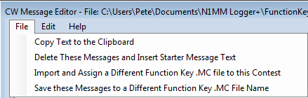
- Copy these Messages to the Clipboard coloca todo o conteúdo do editor na área de transferência
- Delete These Messages and insert Starter Message Text — para voltar às mensagens padrão do modo atual, esta opção as copia para o editor no lugar das que estavam lá, mantendo o nome de arquivo original. Você será perguntado se quer salvar as alterações; OK grava as mudanças no banco de dados e no arquivo .mc aberto, Cancel reverte para o conjunto de mensagens anterior
- Import and Assign a Different Function Key (.MC) file to this Contest atribui a este contest um arquivo escolhido por você. Ele é registrado na aba Associated Files e será aberto automaticamente sempre que você abrir esta ou outra instância deste contest
- Save these Messages to a Different Function Key (.MC) filename abre uma janela para copiar o conteúdo atual do editor para um arquivo .MC com outro nome
Houve uma mudança importante na forma como o texto das mensagens Default [modo] é tratado.
Um conjunto de arquivos .mc padrão é instalado na subpasta FunctionKeyMessages, dentro da pasta de arquivos de usuário do N1MM+, na instalação do programa. Se quiser, você pode modificá-los à vontade, adaptando-os a cada contest, ou criar e salvar arquivos .mc específicos por contest. Note, porém, que se você partir de um arquivo Default CW, por exemplo, fizer alterações no Function Key Editor e salvá-las, elas serão gravadas com aquele mesmo nome de arquivo.
Para restaurar as mensagens Default originais:
- Clique em "Import and Assign a Different Function Key File" no menu File, e selecione o arquivo Default [modo] Messages.mc que deseja reverter
- Clique em "Delete these Messages and Insert Starter Message Text" (também no menu File)
- Clique em Save no Function Key Editor, para salvar as mensagens iniciais (starter) no banco de dados e no arquivo Default [modo] Messages.mc, recriando-o efetivamente na forma original. Se você sair sem clicar em Save, será perguntado se quer salvar as alterações
The Edit or Right-click Menu (Menu Edit / Botão Direito)
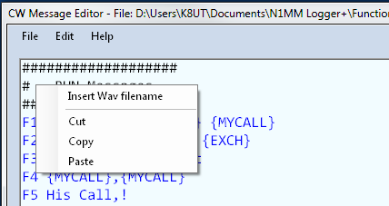
Ao selecionar o menu >Edit, ou clicar com o botão direito na janela do editor, aparece um pequeno menu. Três opções — cortar, copiar e colar — são os comandos de edição já conhecidos do Notepad.
- Insert wav filename faz exatamente o que o nome diz. Ao clicar, você escolhe um arquivo wav existente na pasta N1MM Logger+\Wav; o nome do arquivo é inserido na posição do cursor. Serve para facilitar a construção de mensagens de SSB complexas, combinando macros e nomes de arquivo
Cada banco de dados lembra o arquivo de tecla de função preferido para um determinado contest. Por exemplo, se você atribuir CQWWCW.MC ao CQ Worldwide CW de 2014, o banco vai lembrar essa preferência e atribuir automaticamente o mesmo arquivo ao CQ Worldwide CW de 2015. Porém, se você abrir um novo banco de dados para seus logs, essa memória se perde, e você começa com a atribuição padrão de CW Default Messages.MC.
Function Key Message File Contents (Conteúdo do Arquivo de Mensagens)
Consulte a seção Fundamentals anterior e a captura de tela da janela do Function Key Editor para as explicações a seguir
O N1MM Logger comporta até 24 mensagens por modo (CW, SSB e Digital), divididas em dois conjuntos de 12, um para Run, outro para Search and Pounce (S&P) (mais informações sobre Run x S&P no capítulo Entry Window, seção Function Keys). Isso significa que seus arquivos de mensagem de tecla de função podem ter até 24 linhas ativas, mais um número ilimitado de linhas de comentário.
Comment Line (Linha de Comentário) – qualquer linha que comece com #
- Exemplo de comentário: #Esta é uma linha de comentário
Message Line (Linha de Mensagem) – qualquer linha que não comece com #
- Exemplo simples: F1 CQ, CQ
Linhas de mensagem têm dois elementos — um Rótulo e a Mensagem em si, separados por vírgula ",". Neste exemplo, o rótulo é "F1 CQ" e a mensagem transmitida é "CQ"
- Exemplo simples com macro: F1 CQ, CQ de {MYCALL}
Aqui a mensagem transmitida é "CQ de" seguido do seu indicativo, que o programa busca em Config > Change Your Station Data, campo "Call"
- Exemplo com múltiplos macros: F2 Exch,! {SENTRST} {EXCH} de {MYCALL}
Neste exemplo de exchange de contest, a mensagem começa com o indicativo da outra estação "!", seguido do relatório RST "SENTRST", seguido do exchange do contest (que pode ser um número sequencial, um estado, uma zona CQ, ou outros parâmetros conforme o contest e o campo Sent Exchange no Contest Setup), seguido de "de", e por fim seu indicativo
Em arquivos de mensagem, # inicia uma linha de comentário. Qualquer linha que não comece com # é usada como definição de tecla de função, pareça ou não com uma.
Cada linha ativa (não-comentário) contém um rótulo de botão (que aparece no botão na Entry window), depois uma vírgula, depois o conteúdo. Para colocar um "&" em um rótulo (como em S&P), digite dois "&&" (como em S&&P).
O rótulo é arbitrário. Sugerimos colocar o nome da tecla (F1, F2 etc.) e uma descrição bem breve no rótulo, pois isso faz os botões na Entry Window funcionarem como documentação visual das teclas, mesmo que você nunca use o mouse. Porém, colocar "F3" em um rótulo NÃO significa automaticamente que essa mensagem vai para a F3.
A associação entre as linhas do arquivo .mc e as teclas de função é estritamente posicional. A primeira linha não-comentário (que começa com qualquer caractere diferente de #) é a mensagem de F1, independente do que o rótulo diz. A segunda linha é F2. E assim por diante.
Um arquivo tem até 24 linhas ativas. As primeiras 12 são para o modo Run, as 12 seguintes para S&P. Com menos de 12 linhas ativas, as teclas depois da última ficam vazias, e as teclas de S&P ficam idênticas às de Run. Com exatamente 12, S&P fica idêntico a Run. Entre 12 e 24, as linhas de S&P depois da última ficam idênticas às correspondentes de Run. Por exemplo, com 15 linhas ativas, as 12 primeiras são Run F1-F12; as 3 seguintes são S&P F1-F3, e S&P F4-F12 ficam idênticas a Run F4-F12.
Não pode haver linhas puladas no arquivo. Se você deixar uma linha de fora, todas as seguintes efetivamente sobem uma posição.
Message Content Limitations (Limites do Conteúdo das Mensagens)
- O rótulo é limitado a 29 caracteres, embora você nunca precise usar tantos
- A mensagem completa é limitada a 255 caracteres
- O número de linhas de mensagem costuma ser 24 — 12 para Run e 12 para Search & Pounce. Porém, se você não atribuir mensagens de S&P, o programa substitui automaticamente pelas mensagens de Run. Por exemplo, se suas mensagens de S&P para F9-F12 são idênticas às de Run, você pode deixar essas linhas de fora do arquivo. Mas cuidado, pois não pode haver lacunas na numeração sequencial das mensagens de S&P. Linhas em branco contam como linhas de mensagem!
- A associação entre mensagens e teclas de função é estritamente posicional. A mensagem na primeira linha não-comentário é enviada por F1 em modo Run, independente do rótulo; a da segunda linha por F2 em Run; a da 13ª linha por F1 em S&P; e assim por diante
Function Key Examples (Exemplos de Teclas de Função)
Além dos três arquivos de mensagem padrão instalados com o programa, há também um grande número de arquivos de exemplo (Sample Function Key Files) disponíveis para download no site. A vantagem desses arquivos de exemplo, em relação aos padrão, é que já vêm personalizados para os principais contests e podem ser usados sem mais ajustes.
Há arquivos de tecla de função de exemplo no site, em >Downloads >Category listing >Function Key files, para operação em SSB, CW e Digital. Abra a categoria do modo desejado e baixe os arquivos escolhidos. Para usá-los, você pode indicar esses arquivos ao configurar um novo contest, ou importá-los no editor de tecla de função. Você pode examiná-los no editor ou em um editor de texto como o Notepad.
O programa já vem pré-carregado com arquivos genéricos padrão de mensagens de tecla de função para os três modos: CW Default Messages.mc, SSB Default Messages.mc e Digi Default Messages.mc. Funcionam para contests com exchanges simples (como CQ WW ou CQ WPX), e basicamente para todos os contests de SSB.
Se você usa o arquivo Default Messages.mc de um modo e usa o editor para fazer alterações, essas mudanças ficam permanentes, ou seja, valem para todos os contests futuros que usarem esse arquivo. Portanto, se você fizer alterações para um contest específico mas não quiser que valham para outros, use um arquivo .mc específico daquele contest, em vez do arquivo padrão genérico. Você pode criar ou baixar arquivos específicos de contest e usar a aba Associated Files na Contest Setup Dialog para indicar o arquivo a usar naquele contest. A partir daí, futuros contests do mesmo tipo vão usar automaticamente os mesmos arquivos de mensagem do contest anterior daquele tipo.
SSB
A menos que você use text-to-speech, arquivos de SSB contêm nomes de arquivo wav, que precisam ser fornecidos por você. Normalmente são gravados na própria voz do operador, para evitar confusão entre vozes "ao vivo" e gravadas. Presume-se que estejam na subpasta wav da área de arquivos de usuário do N1MM Logger+. (Nota: se você moveu a área de arquivos de usuário durante uma reinstalação, talvez para evitar problemas com o OneDrive, pode haver mais de uma pasta N1MM Logger+ no seu sistema; a correta, incluindo os arquivos wav, é a indicada pelo menu Help > Open Explorer on User Files Directory.) Se uma macro {OPERATOR}\ ou {WAVDIR}\ aparecer no nome do arquivo, ele será procurado em uma subpasta nomeada com o indicativo do operador atual (ou outro identificador definido por uma macro {SetWavDir}). As macros !, # e @ também podem ser usadas, mas só se houver um conjunto completo de arquivos wav individuais para cada letra e número na subpasta wav\LettersFiles (ou uma subpasta nomeada no Configurer, aba Other, campo DVK Letters File Path). Há um arquivo de exemplo de SSB no site (SSB_Default_Messages.mc). As diferenças entre contests ficam principalmente no conteúdo dos arquivos wav gravados, não no conteúdo das mensagens de tecla de função.
Exemplo básico ilustrando o uso da macro {OPERATOR}:
Garanta que sua pasta wav contenha uma subpasta nomeada com o seu indicativo, e que ela contenha todos os arquivos listados, exceto "empty.wav", que já vem instalado com o programa.
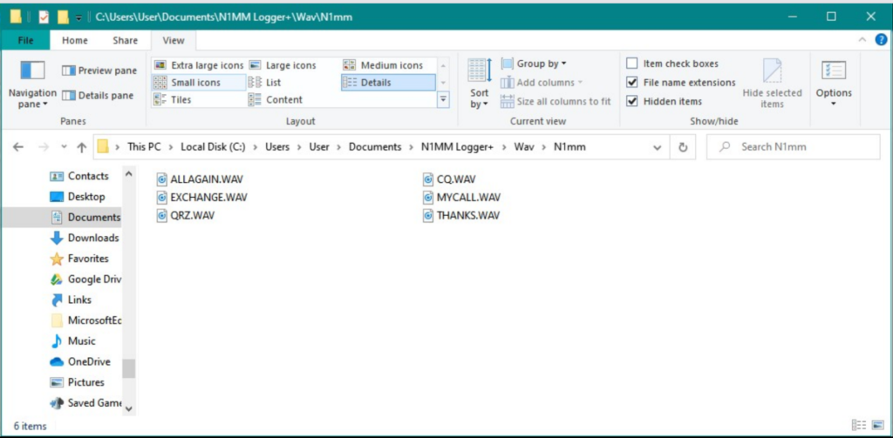
CW
Arquivos de CW contêm o texto real a ser enviado em código Morse, possivelmente misturado com macros de substituição (como {MYCALL}, !, #, {EXCH}) e macros de controle (como {WIPE}, {CLEARRIT}). Note que, se a macro {EXCH} for usada, você precisa informar o exchange correto no campo Sent Exchange da Contest Setup Dialog — consulte as instruções de configuração do contest. Há arquivos de CW no site, na galeria Sample Function Key Files, para a maioria dos contests importantes.
Exemplo genérico de CW
Exemplos de CW para o Sprint
Quer você opere o NA Sprint ou não, estes exemplos ilustram o uso de vários macros combinados com texto em definições de tecla de função.
Sprint CW Exemplo #1
Este conjunto de teclas é baseado em um conjunto postado por Kenny, K2KW:
Notas sobre as mensagens de Running
- Em F2, há um espaço antes do *, ex.: "[espaço] * {EXCH}"
- Em F3, "EE" confirma o QSO. Também daria para usar "TU"
- Depois de enviar "EE" na mensagem F3, a macro {S&P} coloca você em modo S&P. Depois é só usar as setas cima/baixo para fazer QSY
- Pessoalmente, tenho F6 programada como {EXCH} para repetir o exchange
Notas sobre as mensagens de S&P
- Note a diferença na sequência da mensagem F2 em relação à F2 de Running
- Na mensagem F3, a macro {RUN} coloca você em modo Running, pronto para trabalhar um "tail ender" e enviar a sequência correta do QSO
- Pessoalmente, tenho F6 programada como {EXCH} para repetir o exchange
Sprint CW Exemplo #2
Este conjunto de teclas é baseado em um postado por Pete, N4ZR:
Note duas coisas sobre este conjunto:
1. A macro {RUN} está na S&P F2, não na F3. Isso funcionou muito bem para mim — ao pressionar Enter para enviar o exchange de S&P, o exchange era enviado, o QSO logado, e o modo mudava para {RUN} com o cursor no campo de indicativo. Então eu não precisava pressionar F3 para sair de S&P e ir para Run. O problema principal é que, se alguém pede repetição do número serial, as teclas de Run já estão ativas, então você precisa lembrar como pegar o número serial do conjunto de S&P (Shift+F3), ou simplesmente usar a paddle, que foi o que eu fiz.
2. Não há macro {S&P} neste conjunto. No fim de um QSO de Run, você muda para S&P apenas fazendo QSY. Isso também funcionou bem para mim; já que você vai ter que fazer QSY de qualquer jeito, não parece haver necessidade real de forçar a mudança para S&P. Eu também tinha a opção "QSYing wipes the call & spots QSO in bandmap" selecionada, o que deve ter ajudado a garantir que o cursor ficasse no lugar certo depois do QSY, limpando a Entry window. Claro que eu não tinha o bandmap aberto de fato, e simplesmente ignorava qualquer indicativo que aparecesse no quadro de chamada.
Sprint CW Exemplo #3
Personalizando o N1MM Logger para o North American CW Sprint, por Steve, N2IC
Não vou tentar explicar como operar o Sprint — para isso, há um excelente texto em http://www.kkn.net/~n2ic/sprint.html. O que vou fazer é descrever como aproveitar ao máximo o N1MM Logger no Sprint. Eu opero em SO2R, e minha configuração é otimizada para isso. Mas tenho certeza de que quem usa SO1R também vai aproveitar algumas dicas do que fiz para SO2R. A coisa mais importante é configurar corretamente suas opções, janelas e teclas de função antes do Sprint começar.
As Opções...
Inicie o N1MM Logger+ e crie um novo contest SPRINTCW.
No menu Config, selecione as seguintes opções:
- Enter sends message (ESM)
- QSYing wipes the call & spots QSO in bandmap
- Do not automatically switch to run on CQ frequency
- Show non-workable spots
- SO2R > Toggle CTRLFx Macro
Nota: SO2R > Focus on Other Radio NÃO está ligada
As Janelas... são as únicas que tenho na tela, e todas cabem bem no meu monitor pequeno
- Entry Window (uma para cada rádio)
- Visible Dupesheet (uma para cada rádio)
- Info
- Log
- Score Summary
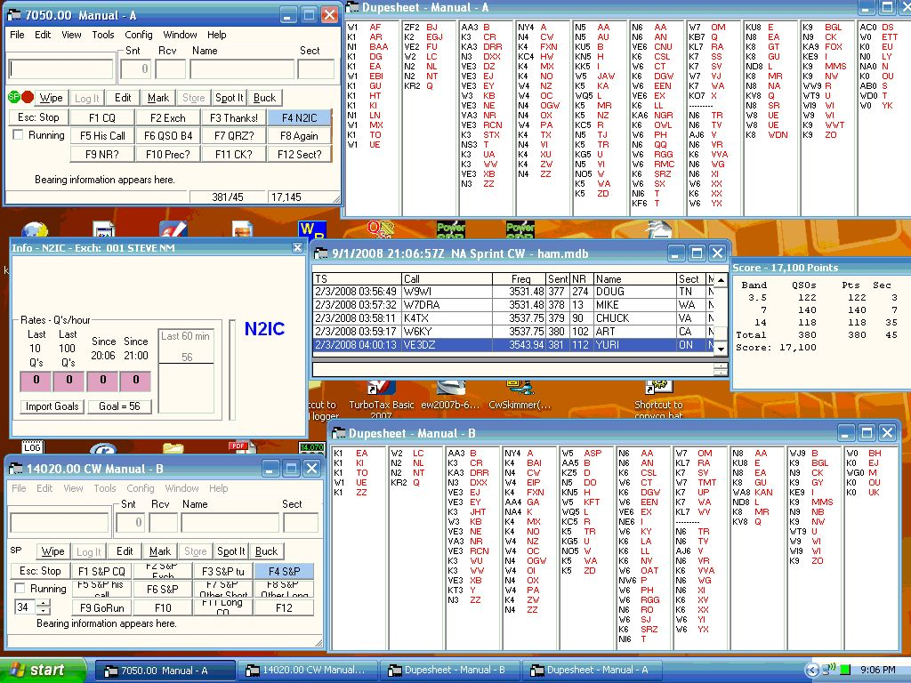
O Visible Dupesheet é bem útil depois que você se acostuma. Para ver se uma estação é dupe, basta passar os olhos pela planilha, em vez de digitar freneticamente o indicativo na Entry Window. Você pode mudar o tamanho da fonte no Visible Dupesheet arrastando-o mais largo, deixando espaço em branco depois da coluna mais à direita, e clicando com o botão direito nesse espaço para escolher fonte pequena ou grande.
Note que eu NÃO deixo a janela "Available Mults & Q's" aberta. Abra a janela Bandmap, mas deixe-a bem pequena — precisa estar aberta, mesmo sem utilidade no Sprint.
Abra a janela Telnet. Vá na aba Filters. Mude o Bandmap DX spot timeout para 1 minuto. Isso mesmo... 1 minuto. Clique em Update. Agora feche a janela Telnet e não a reabra — ela não tem valor no Sprint, mas era importante mudar o valor de timeout dos spots no bandmap para 1 minuto. Isso controla por quanto tempo os indicativos ficam no bandmap e aparecem no quadro "on deck" da Entry Window. Obviamente não usamos packet no Sprint.
Teclas de Função...
Seguem minhas definições de tecla de função. Vou explicar algumas que não são óbvias.
Na tecla CQ F3, minha mensagem de "obrigado" é enviada. Ao fazer QSY, você muda automaticamente para S&P. Não inclua a macro {S&P} aqui — isso faria a última estação trabalhada ficar "presa" no quadro de chamada da Entry Window.
Na S&P F2, assim que envio meu exchange, mudo imediatamente para o modo Run.
Também posso me forçar para os modos Run e S&P com a tecla F9.
As teclas F7 e F8 enviam CQ no "outro" rádio. Muito útil quando a outra estação está enviando o exchange dela e você vai perder a frequência (ou seja, ela vai virar "a frequência dela"). Você pode enviar um CQ no outro rádio enquanto ela envia o exchange. Depois, quando ela terminar e você precisar mandar sua mensagem de "obrigado" para fechar o QSO, basta pressionar Enter, que para o CQ no outro rádio e envia sua mensagem CQ F3 no rádio ativo. Mas é bom estar pronto para copiar uma nova chamada no "outro" rádio. Você também precisa estar afiado com a tecla Pause para pular entre os dois rádios quando isso acontecer. A macro {CONDJUMP} na mensagem Run F3 move o foco de entrada para o "outro" rádio, deixando você pronto para copiar uma nova chamada.
Quando estou chamando CQ no rádio ativo, mas fazendo S&P simultaneamente no outro, e ouço uma estação nova, basta pressionar Enter. Isso para o CQ e envia minha chamada no outro rádio.
Uma coisa que você precisa fazer é ficar de olho em onde estão seus focos de transmissão e recepção (os pontos vermelho e verde na Entry Window). Fazendo SO2R no Sprint, vai haver momentos em que o foco não está onde você espera ou quer. Esteja sempre pronto com as teclas \ e Pause para pular entre os rádios. Sim, isso exige muita prática, e você vai errar. Os Sprints da NCCC às quintas à noite são uma boa forma de treinar.
73 e até o Sprint!
Steve, N2IC
CW Messages Deep Dive (Aprofundando nas Mensagens de CW)
No menu Config, você pode selecionar Change CW/SSB/Digital Function Key Definitions, e depois Change CW Function Key Definitions, ou simplesmente clicar com o botão direito em um dos 12 botões de tecla de função na Entry window. Isso abre esta janela:
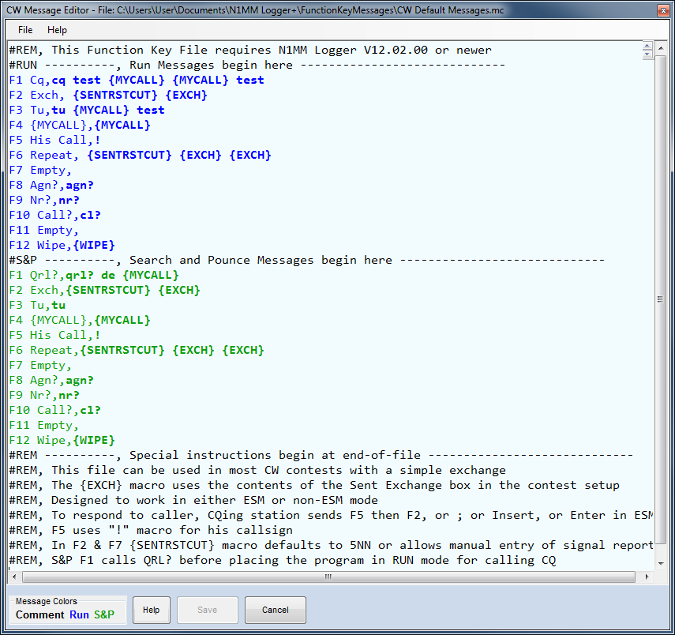
O que ela mostra é o arquivo padrão de mensagens de tecla de função que já vem com o N1MM Logger+. Há muito mais sobre o Function Key Message Editor aqui, mas por enquanto vamos usar o que já está pronto.
De cima para baixo, note a macro {MYCALL}. Uma alternativa é a macro de caractere único *. Ambas representam seu indicativo, vindo da janela Station Data. É uma macro de texto. Existem dois tipos de macro, de texto e de ação — as de texto substituem uma string de texto no lugar da macro, as de ação executam alguma função do programa. Ambas costumam ser combinadas com texto comum em uma mensagem, como aqui — ao pressionar a tecla de função ou clicar no botão F1 na tela, o programa envia CQ TEST N4ZR N4ZR TEST (substituindo o asterisco pelo seu indicativo). Há uma tabela com os muitos Macros reconhecidos no capítulo de mesmo nome do manual, mas por ora vamos seguir em frente.
Por convenção, F2 é usada para o exchange do contest. O arquivo de exemplo usa a macro {EXCH}, uma macro de texto que substitui o que você colocou na parte Sent Exchange do Contest Setup. Digamos que estamos configurando um contest cujo exchange é relatório de sinal, nome e estado. Ao configurar o contest, N4ZR coloca PETE WV no Sent Exchange. Agora, ao pressionar ou clicar F2, o programa envia PETE WV.
Você não precisa usar a macro {EXCH}; é apenas uma conveniência. Sempre é possível cravar o exchange diretamente na definição da mensagem (use # para números seriais).
Também em Run F2 está a macro {SENTRSTCUT}. Muitos de nós simplesmente colocam 5NN explicitamente em F2, mas essa macro é um pouco mais esperta. Ela envia o relatório de sinal (nominalmente 599, mas pode ser alterado na Entry window por QSO) usando N em vez de 9 (só em CW).
Um detalhe importante — você pode pensar em colocar 5NN direto no Sent Exchange do Contest Setup — afinal, todo mundo é 599, certo? Pois bem, não faça isso, porque vai bagunçar seu log Cabrillo. Resigne-se a colocar 5NN ou {SENTRSTCUT} nas suas mensagens de tecla de função, onde quer que precise ser enviado.
O próximo truque útil está em Run F5, onde se usa !. Ele sempre representa o indicativo da outra estação, pego da Entry Window.
Uma última dica — a maioria dos macros tem a forma {PALAVRA}, onde "palavra" é o nome do macro (as principais exceções são *, ! e #, que não usam chaves). As chaves ao redor do nome são necessárias para o programa saber que deve substituir algo ou executar uma ação. É muito fácil digitar colchetes ou parênteses comuns em vez de chaves, então preste atenção.
Daqui em diante, para mudar o conteúdo de qualquer botão de mensagem, basta clicar com o botão direito na área dos botões, e o editor que acabamos de ver reaparece.
Certo — você já conectou sua interface, então está pronto para enviar algum CW pré-gravado. Como explicado acima, pressione a tecla de função F1 ou clique no botão F1. De qualquer forma, o programa vai comutar seu rádio de Recepção para Transmissão (supondo que você tenha o PTT conectado — também pode usar VOX ou break-in, claro), enviar a mensagem, e voltar para Recepção.
RTTY
Mensagens de arquivos digitais geralmente começam com {TX} e terminam com {RX}, exceto macros de controle do programa.
Do jeito que as teclas abaixo são projetadas, elas funcionam em muitos contests de RTTY sem qualquer alteração. Se elas servem para a sua situação depende das suas antenas, potência, QTH etc.; mas talvez lhe deem algumas ideias:
Se o exchange do contest incluir um RST, você pode usar a macro {SENTRST} para enviar o relatório de sinal do campo Snt na Entry window, no lugar de 599 na mensagem de exchange.
Exemplo geral de RTTY
Ao usar as teclas acima, presume-se que o ESM esteja ligado. As teclas de Run F5, F6 e F7 não são muito úteis quando você está em S&P, por isso as programei de forma diferente das teclas de Run. Note também que você pode usar até 24 botões adicionais (só com o mouse, sem acesso pelo teclado) na janela Digital Interface. Por exemplo, dá para configurar chamadas 0x1, 0x2, 0x3 e 0x4, exchanges simples, duplos e triplos, pedidos separados da zona e do estado dele, e repetições só da sua zona ou só do seu estado, e assim por diante.
Exemplo de RTTY onde a hora faz parte do exchange (como no BARTG)
Na tabela a seguir, só as teclas diferentes do exemplo geral acima são mostradas:
Per-Operator Function Key Files (Arquivos de Tecla de Função por Operador)
Há uma opção, selecionável na aba Other do Configurer, que permite que cada operador de uma estação multi-operador tenha seus próprios arquivos de mensagem de tecla de função. Isso dá a operadores diferentes a possibilidade de ter arquivos de mensagens ajustados às suas preferências individuais. O arquivo de tecla de função de todos os operadores parte do nome de arquivo definido na aba Associated Files da janela Contest Setup. O arquivo "mestre" é editado quando o OPERATOR está definido como o indicativo da estação.
Em contests de fonia, não é necessário usar esta opção apenas para mudar a voz nas mensagens gravadas (veja a descrição da macro {OPERATOR} na próxima seção sobre mensagens SSB). Mas, usando arquivos de tecla de função individuais por operador, é possível que um operador use um arquivo com macros ! e # para dizer indicativos e números seriais com letras e números pré-gravados, enquanto outro operador usa um arquivo sem essas macros, falando os indicativos e números diretamente no microfone. Em CW e modos digitais, essa opção permite que cada operador ajuste suas mensagens às próprias preferências.
Com esta opção habilitada, trocar de operador com OPON ou Ctrl+O muda o arquivo de mensagens em uso para o arquivo pessoal daquele operador. Esses arquivos ficam em uma subpasta do diretório principal de mensagens de tecla de função. Na primeira vez que um operador com indicativo diferente do da estação faz login com Ctrl+O ou OPON, o arquivo pessoal dele é inicializado a partir do arquivo "mestre" definido na aba Associated Files. Depois disso, esse operador pode fazer alterações pelo Function Key Message Editor sem afetar os arquivos dos demais operadores, permitindo que cada um tenha seus próprios arquivos individuais. O arquivo "mestre" da aba Associated Files só pode ser editado pelo operador cujo indicativo é igual ao da estação. Veja a descrição de Per-Operator Function Key Messages, na aba Other, na seção Configurer do manual, para mais detalhes de implementação.
Se um operador mudar o nome do arquivo de mensagens definido na aba Associated Files durante o contest, todos os operadores receberão novos arquivos de mensagem baseados no novo nome, ao fazerem OPON.
Special Measures for SSB Function Keys (Medidas Especiais para Teclas de Função de SSB)
Mensagens de CW e RTTY são bem diretas. Mensagens de SSB, porém, exigem instruções adicionais.
O arquivo SSB Default Message.mc, como mostrado no Function Key Editor:
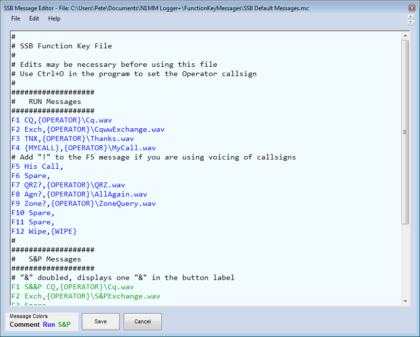
Esta captura de tela mostra as teclas de função de SSB padrão, como entregues originalmente pelo programa. Note que a mensagem F5-His Call vem, de fábrica, com um único espaço. Se você usa a locução de indicativos letra por letra, pode usar a macro "!" (sem espaços antes ou depois) como mensagem de F5 — é a macro usada para dizer o indicativo juntando arquivos de letras e números, então normalmente não seria usada de outra forma. Se você não está locucionando indicativos nem números seriais (veja abaixo), não deveria ter a macro "!" nas suas definições de SSB. O mesmo vale para "#", "*" e "@". No lugar de "*" ou {MYCALL}, use um nome de arquivo explícito como mycall.wav.
Os arquivos Wav referenciados no arquivo de mensagens precisam ser fornecidos por você. Para uso com este arquivo, devem estar no caminho N1MM+ user Wav\. Quando a estação tem múltiplos operadores, use a macro {Operator} no caminho do arquivo wav, como mostrado acima, e coloque os arquivos wav de cada operador em uma subpasta com o indicativo dele: N1MM Logger+\Wav\[operador]\. Por exemplo, os arquivos wav de K3CT operando na estação de N1MM ficariam em N1MM Logger+\Wav\K3CT\. A macro {WAVDIR} pode ser usada no lugar de {OPERATOR} nos caminhos de arquivo wav, para dar suporte a múltiplos conjuntos para o mesmo operador.
Use o comando CTRL+O ou OPON para trocar de operador e dizer ao programa para usar os arquivos Wav daquele operador. Se estiver usando múltiplos conjuntos para o mesmo operador, use {SetWavDir} para definir o valor usado pela macro {WAVDIR}.
Playing Multiple Wav Files (Tocando Múltiplos Arquivos Wav)
Para tocar mais de um arquivo wav com uma tecla de função, separe os nomes de arquivo por vírgula.
F1 CQ,{OPERATOR}\Cq.wav,{OPERATOR}\Cq.wav
The {Operator} Macro (A Macro {Operator})
Como você deve ter notado acima, há uma macro {OPERATOR} no caminho de cada arquivo de mensagem .wav. O objetivo é permitir que os arquivos de mensagem armazenados acompanhem o operador de plantão (em situações multi-op ou com operador convidado), para que a voz usada nas mensagens gravadas seja a mesma do operador ao vivo, ao usar o microfone. Por exemplo, se um conjunto de mensagens (como CQ.wav) está na subpasta Wav\N1XYZ, e N1XYZ é o operador e a mensagem se refere a {OPERATOR}\CQ.wav, o programa vai enviar o CQ.wav dele ao pressionar aquela tecla. O mesmo vale para letras e números gravados, usados na locução de indicativos e números seriais, exceto que esses ficam no caminho identificado na aba Other do Configurer. O caminho padrão dos arquivos de letras é: {Operator}\. Portanto, se seu indicativo é "N1XYZ", os arquivos de letras e números devem ficar na subpasta wav\LettersFiles\N1XYZ\ da área de arquivos de usuário do N1MM+.
O operador atual aparece na barra de título da janela Info, e também em letras azuis grandes dentro dela, à direita. Vem pré-preenchido com o indicativo da Station Data. Para trocar de operador, pressione Ctrl+O e digite o indicativo desejado.
Mesmo operando sozinho, sem nunca precisar trocar de operador, recomendamos manter as macros {OPERATOR} e colocar os arquivos wav em pastas nomeadas com o seu indicativo. Isso facilita adicionar um operador convidado depois, e enquanto isso a substituição de {OPERATOR} vem da página Station Data.
No lugar da macro {OPERATOR} nos caminhos de arquivo wav, pode-se usar a macro {WAVDIR}. Por padrão, o resultado de usar {WAVDIR} é o mesmo de usar {OPERATOR}. O objetivo da macro {WAVDIR} é permitir usar diretórios de wav diferentes para variações de fonética ou idioma pelo mesmo operador. Ao iniciar o programa ou trocar de operador (OpOn ou Ctrl+O), {WAVDIR} é definido com o indicativo do operador. A macro {OPERATOR} ainda pode ser usada em arquivos de tecla de função, mas seu uso está sendo descontinuado, e as mensagens padrão de SSB do programa já usam {WAVDIR}. Operadores que queiram variar arquivos wav ou de letras por fonética ou idioma devem mudar seus arquivos de tecla de função para usar {WAVDIR} e a nova macro {SetWavDir}.
Recording on the Fly (Gravando na Hora)
Se você precisa gravar ou regravar um arquivo de tecla de função com urgência, pode fazer isso de dentro do programa, desde que a mensagem de tecla de função chame apenas um único arquivo .wav. Este método também presume que o microfone está ligado ao rádio pela placa de som (permanentemente, ou temporariamente durante a gravação). Apesar das limitações, é muito útil, principalmente para operação split em contests de SSB, onde a frequência de escuta muda com frequência.
A sequência de teclas para iniciar e parar a gravação na hora é Ctrl+Shift+Fkey, tanto em Run quanto em S&P.
Ao iniciar a gravação, uma mensagem aparece na linha de status da Entry window: algo como "start recording:[caminho e nome do arquivo]". Pressione Ctrl+Shift+Fkey de novo ao terminar de gravar, e a linha de status vai mostrar "recording saved: [caminho e nome do arquivo]". Se aparecer uma mensagem de erro e a Entry window não for larga o suficiente para lê-la toda, basta esticá-la horizontalmente.
Se você chamar um arquivo .wav que não existe (por exemplo, por um nome ou caminho errado no arquivo .mc), você será avisado no mesmo lugar. Para investigar problemas de caminho, pode ser necessário esticar a Entry window horizontalmente, já que há pouco espaço para a mensagem na linha de status.
Voicing Call-signs, Serial Numbers and Frequencies (Locução de Indicativos, Números Seriais e Frequências)
A opção de locucionar indicativos, números seriais e frequências caractere por caractere parece estar cada vez mais popular entre os contesters de SSB. Um operador, para proteger o sono da esposa e dos filhos pequenos, chegou a montar um conjunto tão completo de arquivos de locução que conseguia operar um Sweepstakes inteiro sem usar o microfone.
Quando a locução é usada, as macros !, # e @ podem ser usadas em mensagens de SSB, e o programa envia os arquivos individuais de letra e número que compõem o indicativo ou número a ser enviado, ou, se um indicativo completo ou parcial estiver gravado como arquivo wav, usa esse arquivo como parte ou todo o envio. As letras, números, caracteres especiais e fragmentos de indicativo usados na locução ficam no local definido no caminho de arquivos de letras, na aba Other do Configurer. De novo, se você quiser ter mais de um operador, é melhor inserir a macro {OPERATOR} nesse caminho, e gravar em uma subpasta nomeada com o indicativo do operador, para que Ctrl+O diga ao programa qual conjunto de arquivos de letras usar.
Mensagens de tecla de função com locução podem ter mais de um arquivo wav ou macro. Use vírgulas para separar os nomes de arquivo e macros dentro de uma mensagem. Por exemplo, para enviar 59 seguido de um número serial:
F2 Exch,fivenine.wav,#
onde fivenine.wav é um arquivo wav com "five nine". A macro # é separada do nome do arquivo wav por vírgula.
Nota: se você não quiser usar locução, garanta que sua tecla Run F5 esteja programada com um único espaço, e não "!".
Locução Simples
Essa técnica é usada para locucionar indicativos, como a forma mais simples de locucionar números seriais, para informar sua frequência de escuta em operação split, e para locucionar as macros {SENTRST}, {ROVERQTH} e {COUNTYLINE}. O operador precisa gravar arquivos para as letras A-Z, os números 0-9, e alguns caracteres especiais — query.wav para o caractere "?", stroke.wav para a barra usada em indicativos de operação recíproca, operação portátil etc. (denotada no log pela barra "/"), e point.wav para o ponto decimal (em uma frequência, por exemplo). Opcionalmente, você também pode gravar um arquivo strokep.wav para o indicador "/P" (portátil) (por exemplo, para enviar "stroke portable" em vez de "stroke papa" com arquivos separados stroke.wav e P.wav). Quando a macro ! está em uma definição de tecla de função e a tecla é pressionada, o programa substitui por uma sequência de arquivos .wav para o número ou indicativo. N1MM é decomposto em N.wav+1.wav+M.wav+M.wav. As macros # e @ funcionam da mesma forma para números seriais e frequência, respectivamente.
Ao locucionar indicativos ou números seriais, o programa procura todos os arquivos no "Letters Wav File Path" configurável pelo usuário. Esse caminho é definido em Config, aba Other, e permite escolher o diretório a usar abaixo de Wav\LettersFiles. O caminho padrão é: {WAVDIR}\, que normalmente equivale a {OPERATOR}\, ou seja, procura arquivos em Wav\LettersFiles\[IndicativoDoOperador].
Se o indicativo da Entry window existir como um arquivo "indicativo".wav, ou um fragmento de grupo de caracteres (duas ou mais letras/números), nesse diretório, o arquivo do grupo é tocado ao locucionar o indicativo. Caracteres restantes não cobertos são locucionados como arquivos de letra individuais. Ao nomear arquivos wav de tecla de função, use nomes que não apareçam dentro de indicativos (use algo como CQ_RUN.wav em vez de CQ.wav, senão um indicativo como WZ9CQY seria locucionado com sua mensagem de CQ inteira entre o WZ9 e o Y!).
Locução Avançada
Essa técnica locuciona números seriais de forma considerada mais inteligível que uma simples sequência de dígitos. A teoria é que "cento e vinte e três" tende a ser mais fácil de entender que "um dois três", pela redundância adicionada pelos "marcadores de posição".
Para implementar a locução avançada, você precisa gravar os seguintes arquivos wav, armazenados no "Letters Wav File Path" (Config, aba Other). O caminho de arquivos de letras pode conter a macro {Operator} ou {WAVDIR}, essencial se você tem mais de um operador ou usa múltiplos conjuntos de arquivos wav. Exemplo: se o caminho no Configurer for {OPERATOR}\, os arquivos de letras e números ficarão na subpasta Wav\LettersFiles\{Operator}\ da pasta de arquivos de usuário do N1MM+ (localizável pelo menu Help > Open Explorer on User Files Directory).
0.wav até 19.wav (20 arquivos)
20.wav até 90.wav (só as dezenas exatas) (8 arquivos)
HUNDRED.wav e THOUSAND.wav
Ao tentar locucionar um número pela primeira vez após iniciar o programa, ele verifica se todos os arquivos necessários para a locução avançada estão presentes. O resultado dessa verificação aparece na parte inferior da janela Info, então mantenha-a aberta. Se algum estiver faltando, os números seriais serão locucionados pelo método simples. A mesma verificação é feita ao trocar de operador (com Ctrl+O).
Uma tabela completa mostrando os arquivos locucionados para cada número está disponível na seção de arquivos do site, no arquivo "Advanced voicing of serial numbers.txt". Há mais uma variação — se o Logger estiver configurado para usar zeros à esquerda, um ou dois arquivos 0.wav são locucionados antes do número, conforme o caso. Não recomendamos usar zeros à esquerda com a Locução Avançada — como você pode imaginar, "zero onze" provavelmente não é mais inteligível que "onze" ou "zero um um".
Uma boa forma de conseguir números com som natural é gravar números compostos inteiros, como "cento e dez" ou "dois mil quatrocentos e treze", com um programa como o Audacity (veja abaixo), e depois cortar a gravação nos componentes necessários. Isso ajuda a manter um padrão de entonação natural, tornando os números locucionados mais fáceis de entender.
Recording Letters and Numbers (Gravando Letras e Números)
Esta é a parte mais difícil da locução. Um som mais natural facilita muito o entendimento por outras estações, um ponto especialmente importante para números seriais. Como reduzir o som "robótico" é uma questão complicada, como quem já usou serviços automáticos de informação por telefone sabe bem.
O atraso entre números introduzido pelo programa é bem curto, então os verdadeiros truques são:
- cortar os arquivos de voz individuais para terem o mínimo de "silêncio morto" possível antes e depois da letra ou número
- ajustar velocidade, entonação e nível de áudio dos arquivos de número individuais para que se encaixem da forma mais natural possível
A melhor ferramenta única que encontramos para isso é o editor de áudio gratuito Audacity. Ele traz uma variedade de ótimas ferramentas para cortar, equalizar níveis etc. Muito vai depender de quanto tempo cada operador está disposto a dedicar.
Ao gravar no Audacity, use "Export as .WAV" com as configurações padrão de criação de arquivo; elas funcionam bem no N1MM Logger, enquanto algumas outras opções de .wav não funcionam.
Aqui vai uma dica que ajudou algumas pessoas. Pode ou não funcionar para você.
- Não grave letras e números isolados. Em vez disso, grave sequências parecidas com indicativos, como AB1CD, EF2GH etc. Tente falar na mesma velocidade de um contest. Depois use o Audacity (ou o editor que preferir) para cortar a gravação, remover tempo morto, e equalizar os níveis. Você pode até usar a ferramenta Change Tempo (em Effects) para acelerar as letras e números gravados, deixando-os mais naturais mas mantendo o tom e as características da sua voz — impressionante!
Processing All Recordings with Audacity (Processando Todas as Gravações com o Audacity)
O Audacity consegue processar arquivos em lote usando "Macros" (antes chamadas "Chains" em versões antigas). Se você usa locução de indicativos, pode achar isso útil. Macros são criadas e executadas pelo menu Tools do Audacity, e você pode selecionar vários arquivos de uma vez. A macro abaixo faz o seguinte:
- Remove frequências altas
- Remove frequências baixas
- Normaliza os níveis
- Trunca silêncio (cuidado com silêncio entre sílabas/palavras)
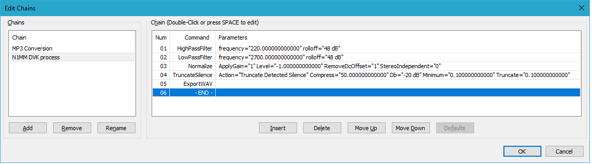
Should I Use Voicing? (Devo Usar Locução?)
Isso ainda é controverso. A economia de energia durante um contest vale a possível perda de inteligibilidade? Em tese, dá para operar um contest inteiro em "search and pounce" sem nunca falar uma palavra. Por um lado, quando você está fazendo Run, locucionar o indicativo da outra estação é bem seguro, já que ela sabe quem é e só precisa ter certeza de que você a está chamando. Por outro, alguns operadores acham que a perda do "toque humano" pode desanimar contesters casuais de chamar.
Do ponto de vista da inteligibilidade, locucionar números seriais é menos atraente. Em más condições, a qualidade "robótica" pode dificultar a cópia, principalmente para quem não fala inglês. O veredito também ainda está em aberto aqui.
Voicing vs Text-to-Speech (Locução x Texto-para-Voz)
A locução descrita aqui usa arquivos wav individuais para dizer um conjunto restrito de macros (!, # e @, usadas em mensagens de tecla de função). Não deve ser confundida com text-to-speech (texto-para-voz), que em princípio consegue dizer qualquer texto em linguagem natural sem precisar pré-gravar cada palavra ou frase usada. A partir da versão 1.0.10913.0, o N1MM Logger+ pode usar text-to-speech em arquivos de mensagem de SSB. O text-to-speech não usa arquivos wav pré-gravados; em vez disso, gera fala a partir de mensagens de texto usando um "modelo de voz", que pode ser uma das várias vozes predefinidas, ou um modelo personalizado gerado com a sua própria voz. Para mais informações, veja a descrição da janela Audio Setup.
Macros
Um dos grandes pontos fortes do N1MM Logger+ é a capacidade de enviar mensagens armazenadas durante os QSOs de contest, e de embutir macros nessas mensagens. Macros se chamam assim porque se expandem em uma string de texto fixa, para CW e modos digitais, ou executam alguma função do programa. Um exemplo do primeiro tipo é a macro {EXCH}, que se expande no exchange informado no campo Sent Exchange da Contest Setup Dialog — se você digitar John CT, é isso que será enviado sempre que a macro {EXCH} aparecer.
O segundo tipo (controle do programa) é bem mais complexo e poderoso. Essas macros podem mudar o programa de RUN para S&P, essencial no NA Sprint; ligar ou desligar o RIT do seu transceptor; e uma infinidade de outras possibilidades. Nas seções a seguir, você encontra uma lista completa de todas as macros disponíveis no N1MM Logger+, além de exemplos úteis de como estruturar mensagens armazenadas para operar com eficiência.
General Macro Commands (Comandos de Macro Gerais)
Macros gerais podem ser usadas em todos os lugares mencionados acima.
* Envia o indicativo desta estação
* (asterisco) envia o indicativo da estação registrado em >Config >Station Info. Equivale à macro {MYCALL}.
! Envia o indicativo digitado no campo Callsign
! (exclamação) envia o indicativo do campo Callsign da Entry window, ou, se vazio, o último indicativo logado. Use esta macro em vez de {CALL} se quiser que a função Send Corrected Call funcione corretamente.
# Envia o número serial deste QSO
# (cerquilha) envia o número serial deste QSO, ou, sem indicativo na Entry window, o número serial do QSO anterior. Ao locucionar números, o caminho usado é o "DVK Letters Path" (Configurer, aba Other), tipicamente contendo {Operator}\, para tocar arquivos wav específicos do operador.
@ Locuciona a frequência de recepção atual
@ (arroba) locuciona a frequência de recepção atual, se você tiver arquivos gravados para letras e números individuais. Usa o mesmo "DVK Letters Path" acima. A frequência é locucionada ao múltiplo de 100 Hz mais próximo, omitindo ".0" em frequências exatas de kHz. Útil para evitar regravar mensagens de CQ em split de 40m. Exemplo: {operator}\CQ Listening.wav,@,{operator}\AndThisFreq.wav
{CALL} Envia o indicativo anterior ou não corrigido do campo Callsign
{CALL} Envia o indicativo do campo Callsign como estava no início do envio da mensagem, ou, se vazio, o último indicativo logado. Nota: isso envia o indicativo como estava quando a mensagem COMEÇOU. Use a macro ! em vez desta para usar a função Send Corrected Call. Não use {CALL} em F5 (His Call key) se usar ESM; use ! em F5 no lugar. Isso é fundamental se você pressionar Enter em ESM antes de terminar de digitar o indicativo, pois os caracteres digitados depois do Enter não serão enviados a menos que você use !. Da mesma forma, se usar Insert ou ; para enviar o exchange, garanta que F5 use ! e não {CALL}.
{CHNAME} Envia o Nome do arquivo de Call History
{CHNAME} Se um arquivo de Call History está carregado no banco atual, e há um nome cadastrado para o indicativo digitado, esta macro envia esse nome. Não é necessário ter o Call History Lookup habilitado para esta macro funcionar.
{CLUSTER} Indicativo de cluster da janela Station info
{CLUSTER} Indicativo de cluster da janela Station info. Veja exemplos.
{COMMENT} Adiciona uma string a um QSO
{COMMENT} Adiciona ao campo de comentário do QSO atual ou do último.
{CQ} Define uma mensagem de CQ alternativa
{CQ} Permite que uma tecla de função não definida na aba Function Keys do Config seja usada como mensagem alternativa de CQ.
{Telnet cmd} Envia um comando para a janela Telnet (se aberta)
{Telnet cmd} Usada para sh/dx e outros comandos de Telnet.
{END} Guarda todo o texto de macro depois de {END} e o executa
Para usar a macro {END}, a tecla de função precisa enviar uma mensagem; se nada for enviado, {END} é ignorada. Ela guarda todo o texto de macro que vem depois dela e o executa depois que a mensagem de CW, SSB ou DIGI for enviada. Um uso comum é enviar comandos CAT ao(s) rádio(s) após o fim de uma transmissão. Todo texto de mensagem colocado após {END} não é enviado.
Exemplos da macro {END}
Ela sinaliza ao programa que os comandos {} restantes devem ser executados quando o programa terminar de enviar a mensagem de CW, SSB ou DIGI. Exemplo:
Mensagem: F1 {STEREOOFF}CQ TEST *{END}{STEREOON}
Ao pressionar F1, o bit de estéreo na porta LPT é desligado. O CQ é enviado no modo atual, e depois que a mensagem termina, o bit de estéreo é ligado de novo. Assim, dá para ouvir só o segundo rádio enquanto o CQ é enviado, e ouvir os dois depois.
Só macros que não envolvem envio de mensagem são executadas quando colocadas depois de {END}. Por exemplo, se você colocar {MYCALL} ou "5NN" depois de {END}, elas serão ignoradas — afinal, a mensagem já acabou, não há mais nada a enviar. Por outro lado, todas as macros que só disparam funções do programa (sem enviar mensagens) são executadas antes de qualquer mensagem, a menos que apareçam depois de um {END}.
{EXCH} Exchange Enviado
{EXCH} Usa o conteúdo do campo Sent Exchange da Contest Setup Dialog. Uma conveniência que funciona em muitos (mas não todos) os contests. Sempre é possível (e em alguns contests necessário) cravar o exchange específico do contest diretamente na mensagem, em vez de usar {EXCH}. Quando o exchange enviado inclui um número serial (001 ou # no campo Sent Exchange), o número enviado é do QSO atual, se houver indicativo na Entry window, ou do QSO anterior, se não houver.
{EXCHSENT} Define o status de "exchange já enviado"
{EXCHSENT} Diz ao programa que o exchange já foi enviado. O estado do ESM muda quando o exchange é enviado pela Exchange key (F2). Se você quiser usar um formato alternativo de exchange, de outra tecla de função, sem antes enviar a mensagem normal de Exchange, esta macro muda o estado do ESM como se a Exchange key tivesse sido usada.
{FORCELOG} Força o programa a logar um contato
{FORCELOG} Mesmo efeito de Ctrl+Alt+Enter, mas sem pedir uma nota. Contatos forçados com exchange inválido podem gerar cálculos de pontuação incorretos.
{FORCELOGNOTE} Força o log de um contato, mas com uma nota
{FORCELOGNOTE} Igual a {FORCELOG}, mas pergunta se você quer inserir uma nota explicando o log forçado.
{FREQ} Frequência do contato na Entry window
{FREQ} Frequência do contato na Entry window. Em CW, substitui o decimal por "R".
{FREQUP}, {FREQDN} Muda a frequência do rádio, normalmente após um contato
Muda a frequência pelo incremento definido em Configurer > Other. Usadas depois da macro {END}.
{FREQROUND} Frequência do contato na Entry window
{FREQROUND} Frequência do contato na Entry window, arredondada ao kHz mais próximo.
{GRID} Gridsquare da janela Station info
{GRID} Gridsquare da janela Station info.
{GRIDSQUARE} Gridsquare do campo de grid (contato na Entry window)
{GRIDSQUARE} Gridsquare do campo de grid (contato na Entry window).
{GRIDBEARING} Rumo entre o seu gridsquare e o do campo de grid
{GRIDBEARING} Rumo entre o seu gridsquare e o do campo de grid (contato na Entry window).
{REVGRIDBEARING} Rumo inverso entre o seu gridsquare e o do campo de grid
{REVGRIDBEARING} Rumo inverso entre o seu gridsquare e o do campo de grid (contato na Entry window).
{KMGRIGDISTANCE} Distância em km entre o seu gridsquare e o do campo de grid
{KMGRIGDISTANCE} Distância em km entre o seu gridsquare e o do campo de grid (contato na Entry window).
{LOG} Loga o contato atual. Equivale ao botão Log It da Entry Window
{LOG} Loga o contato atual, igual ao botão Log It. Em Digital: coloque a macro {LOG} depois da macro {RX}.
{SwapContests} Limpa o contato atual, troca para o penúltimo log de contest e restaura o contato
{SwapContests} deve ser colocada em uma tecla de função ou botão do bandmap. Ao pressionar, troca para o penúltimo contest, preservando os dados de QSO parcialmente digitados.
{SwapContests nome-do-contest estado} Limpa o contato atual, troca para o contest indicado e o restaura.
Permite que teclas de função ou botões do bandmap troquem para contests específicos. Os contests precisam estar no mesmo banco de dados, e a instância mais recente é carregada. O "estado" só é necessário quando o nome do contest é QSOPARTY, e usa a mesma abreviação do Contest Setup.
{SwapContestsn} Limpa o contato atual, alterna entre os últimos n contests e restaura o contato.
n pode ser 3, 4, 5 ou 6. {SwapContests3} alterna entre os últimos três contests, {SwapContests4} entre os últimos quatro, e assim por diante.
{LASTCALL} Indicativo da última estação logada
{LASTCALL} Indicativo da última estação logada.
{LASTEXCH} Exchange da última estação logada
{LASTEXCH} Exchange da última estação logada. Só para ROPOCO e LZOPEN. NÃO funciona em outros contests!
{MYCALL} Seu indicativo, da janela Station info
{MYCALL} Seu indicativo, da janela Station info, igual a *.
{NAME} Envia o nome digitado no campo Name da Entry Window
{NAME} Envia o nome do campo Name da Entry window, em contests específicos (ex.: TARA), ou, sem campo Name, busca o nome na tabela de Call History.
{NAMEANDSPACE} Envia o nome digitado no campo Name da Entry Window
{NAMEANDSPACE} Igual a {NAME}, mas acrescenta um espaço depois.
{OTHERFREQ} Substituída pela frequência do rádio não ativo
{OTHERFREQ} Substituída pela frequência do rádio não ativo. Usada para "passar" estações para outras bandas. Em CW, substitui o decimal por "R".
{OTHERFREQROUND} Substituída pela frequência do rádio não ativo, arredondada ao kHz mais próximo
{OTHERFREQROUND} Igual acima, arredondada. Usada para passar estações para outras bandas.
{OTRSP XXXX} Envia um comando a um dispositivo OTRSP
{OTRSP XXXX} Envia um comando a um dispositivo OTRSP (Open Two-Radio Switching Protocol). XXXX pode ser qualquer comando reconhecido pelo dispositivo.
{OTRSP RX} Envia o comando OTRSP RX ao dispositivo
{OTRSP RX} Ativa o RX correspondente ao rádio ativo no momento.
{OTRSPOTHER RX} Envia o comando OTRSP RX ao dispositivo
{OTRSPOTHER RX} Ativa o RX correspondente ao rádio inativo. Por exemplo, se o Radio 1 tem o foco de teclado e {OTRSPOTHER RX} é acionada, o comando OTRSP RX2 é enviado, mas o foco de teclado continua no Radio 1.
{PGDN} Aumenta a frequência
{PGDN} Aumenta a frequência pelo valor definido em "PgUp/PgDn Incr (kHz)" (Configurer, aba Other). Pode ser usada depois da macro {END}, como nas mensagens de tecla de função do NA Sprint.
{PGUP} Diminui a frequência
{PGUP} Diminui a frequência pelo mesmo valor. Pode ser usada depois da macro {END}, como nas mensagens do NA Sprint.
{PREVNR} Envia o número de QSO do último QSO logado
{PREVNR} Envia o número de QSO do último QSO logado.
{DIGQTCR} Abre a janela QTC Receive
{DIGQTCR} Só para o contest WAE. Abre a janela QTC Receive.
{DIGQTCS} Abre a janela QTC Send
{DIGQTCS} Só para o contest WAE. Abre a janela QTC Send.
{QTC} Envia a mensagem de TU após um bloco de QTCs
{QTC} Só para o contest WAE. Em CW, usada na mensagem de TU enviada após um bloco de QTCs. Em RTTY, usada na mensagem Send All Heading SQTC para o número do bloco de QTC (veja Config > WAE > Open QTC setup na Entry Window).
{LRMHZ} Frequência do Rádio/VFO-A esquerdo, em MHz
{LRMHZ} Exemplo: 28, em 28.1234 MHz.
{RRMHZ} Frequência do Rádio/VFO-B direito, em MHz
{RRMHZ} Exemplo: 14, em 14.1235 MHz.
{RUN} Muda para o modo RUN
{RUN} Muda para o modo Running.
{S&P} Muda para o modo S&P
{S&P} Muda para o modo S&P.
{SPACE} Equivale a pressionar a barra de espaço
{SPACE} Útil fora do modo ESM, para autopreencher o exchange. Exemplo: F2 exchange, 5nn 4{END}{SPACE}
{SPOTME} Envia um autospot para o cluster conectado
{SPOTME} Faz seu próprio spot em contests ARRL (e outros que permitam, mediante autorização do patrocinador). Só funciona em modo RUN. Não repete o spot na mesma frequência (dentro da tolerância de sintonia do Configurer, aba Other) com intervalo menor que 10 minutos.
{STEREOOFF} Desliga o áudio estéreo
{STEREOOFF} Desliga o áudio estéreo.
{STEREOON} Liga o áudio estéreo
{STEREOON} Liga o áudio estéreo.
{TIMESTAMP} Data e hora do contato na Entry Window
{TIMESTAMP} Data e hora do contato na Entry Window.
{TX} Aciona o PTT a partir de uma tecla de função
{TX} CW/SSB: ao ser enviada em uma tecla de função, aciona o PTT. Use Esc para desligar — é um PTT manual pelo teclado. RTTY: veja as macros digitais abaixo. Nota: pode não funcionar com algumas combinações de rádio/interface.
{CLEARRIT} Zera o RIT
{CLEARRIT} Zera o RIT. Pode ser usada na mensagem que confirma o contato (geralmente F3) ou na mensagem de CQ (geralmente F1). Use o RIT enquanto a estação chama, e ao logar o contato (com F3) o RIT é zerado. Nota: só funciona em rádios que suportam essa função — a maioria dos rádios ICOM não suporta. Consulte o manual do rádio.
{CTRL-A}...{CTRL-Z} Envia o caractere Ctrl+A ao TNC
{CTRL-A}...{CTRL-Z} Envia o caractere Ctrl correspondente ao TNC, de A a Z. Não válido em MMTTY e PSK. Veja exemplos.
{ENTER} Envia o caractere ENTER ao TNC
{ENTER} Envia ENTER ao TNC.
{ENTERLF} Envia Retorno/Avanço de Linha ao TNC
{ENTERLF} Tente esta se {ENTER} não parecer funcionar.
{ESC} Envia o caractere Escape ao TNC
{ESC} Não válido em MMTTY e PSK. Veja exemplos.
{DATE} Data curta no formato do Windows
{DATE} Conforme as Configurações Regionais do Windows.
{DATE1} Data no formato Nordlink-TF/WA8DED
{DATE1} Formato dd.mm.aa — exemplo: 26.02.99.
{SENTRST} Envia o RST digitado no campo Snt da Entry window
{SENTRST} Não espere que o RST esteja correto se o campo Snt não estiver preenchido. Em modos de voz, se locucionando números seriais e indicativo, pode ser usada para enviar o relatório do campo Snt. Em CW e digital, se não houver campo Snt na Entry window, esta macro e o espaço seguinte são removidos da mensagem enviada.
{SENTRSTCUT} Envia o RST do contato atual em formato "cut"
{SENTRSTCUT} O uso mais comum é enviar o número 9 como o caractere N (não é útil em RTTY, pois 5NN demora mais para enviar que 599 em RTTY). Se o campo de indicativo estiver vazio, o modo do contato atual não está definido, então não espere que o RST enviado esteja correto nesse caso. Se quiser enviar exchanges com o campo de indicativo vazio, remova esta macro e insira 5NN diretamente na mensagem. Em CW e digital, sem campo Snt, esta macro e o espaço seguinte são removidos.
{TIME} Hora no formato do Windows
{TIME} Conforme as Configurações Regionais do Windows.
{TIME1} Hora no formato Nordlink-TF/WA8DED
{TIME1} Formato hh:mm:ss — exemplo: 17:36:55.
{TIME2} Hora GMT curta (hhmm)
{TIME2} Formato hhmm — exemplo: 1736. Informações sobre como esta macro funciona em contests digitais estão nas instruções de configuração do contest específico.
{DAYTIME} Data no formato TAPR DayTime
{DAYTIME} Formato: 1907291736.
{DATEGMT} Data e hora GMT
{DATEGMT} No formato do Windows (Configurações Regionais).
{TIMEGMT} Hora GMT
{TIMEGMT} Formato: 17:36:55.
{F1} – {F12} Envia as teclas de função F1 a F12
{F1} – {F12} Envia o texto atribuído às teclas de função F1 a F12.
{SOCALLSTACK} Habilita o empilhamento de indicativos para operador único
Em modo RUN, permite empilhar e recuperar um único indicativo quando várias estações chamam ao mesmo tempo. O indicativo empilhado não precisa ser completo e pode conter "?". Funciona em SO1V/2V ou SO2R, nas duas Entry windows, com ou sem ESM. Em RUN, {SOCALLSTACK} move um indicativo (completo ou parcial) para o quadro de chamada e o bandmap. Se já houver um indicativo empilhado no quadro, os indicativos são trocados entre si. Se o indicativo tiver um "?", o cursor destaca o "?" ao ser retirado da pilha; caso contrário, o cursor vai para o início do indicativo. Com o comando ALT+D já existente, dá para apagar um indicativo empilhado do bandmap e do quadro de chamada sem retirá-lo da pilha, quando o campo de indicativo estiver vazio. {SOCALLSTACK} também retira o indicativo da pilha se o ESM o substituiu pela string CQ-Frequency, ficando visível no bandmap; nesse caso, pressione a barra de espaço para retirá-lo. {SOCALLSTACK} empilha só mais um indicativo por vez; para empilhar vários, use {STACKANOTHER}. Mais informações no capítulo Single Operator Call Stacking.
{STACKANOTHER} Empilha indicativos adicionais
Equivale a Ctrl+Alt+G. Mais informações no capítulo Single Operator Call Stacking, e também usada no empilhamento multi-operador (Partner Mode).
{CLRSTACK} Limpa a pilha de indicativos
{CLRSTACK} Limpa a pilha de indicativos.
{LOGTHENPOP} Loga a estação atual e inicia um QSO com um indicativo da pilha, em modo Run
{LOGTHENPOP} Só em modo RUN. Feita para uso com o empilhamento de indicativos: loga a estação atual (enviando correções se habilitado), retira o próximo indicativo da pilha, e inicia o próximo contato. Pode ser usada com ou sem ESM. Com ESM, a tecla "Next Call" (Configurer, aba Function Keys) deve apontar para a mensagem com {LOGTHENPOP}; se houver um indicativo na pilha, o ESM envia automaticamente a tecla "Next Call" no lugar da tecla normal de "End of QSO". Mensagem sugerida para "Next Call": {LOGTHENPOP} TU NW {F5}{F2} (Nota: NÃO use ! no lugar de {F5}, e em contests com número serial, NÃO use # na mensagem com {LOGTHENPOP}). Em CW, se {LOGTHENPOP} não conseguir retirar um indicativo da pilha e o indicativo logado foi alterado, envia a correção (se habilitada) e a mensagem de TU. Mais informações no capítulo Single Operator Call Stacking.
{LOGTHENNEXT} Versão não automatizada de {LOGTHENPOP}
{LOGTHENNEXT} funciona igual a {LOGTHENPOP}, exceto que, se usada na tecla Next do ESM, a automação do Next é desabilitada, e o operador precisa pressionar a tecla de função manualmente em vez de usar Enter.
{ROVERQTH} Envia o QTH do Rover
{ROVERQTH} Veja o capítulo Setup QSO Parties – CW and SSB para mais informações sobre suporte a Rover. Com locução de números seriais e indicativos habilitada, também locuciona o QTH do Rover.
{POPPREVNEEDEDQ} Recupera o indicativo e grid/exchange anterior e os coloca nos campos da Entry window
{POPPREVNEEDEDQ} Percorre os QSOs logados recentemente, colocando o indicativo e grid/exchange na Entry window. Útil em contests de VHF, movendo uma ou mais estações de banda em banda. O QSO atualmente recuperado fica destacado na janela Log.
{POPNEXTNEEDEDQ} Igual a {POPPREVNEEDEDQ}, mas na direção oposta
{POPNEXTNEEDEDQ} Veja {POPPREVNEEDEDQ}.
{VARYMSG1} {VARYMSG2} Alternam mensagens de tecla de função
Podem ser usadas em todos os modos, permitindo controlar com que frequência uma forma alternativa de mensagem é enviada, no lugar da forma principal. Existem duas dessas macros (VARYMSG1 e VARYMSG2); cada uma só pode ser usada uma vez por conjunto de teclas de função. A forma é {VARYMSGn&Mensagem Principal&Mensagem Alternativa&Frequência do Alternativo&}. Substitua "Mensagem Principal" pela forma enviada com mais frequência, "Mensagem Alternativa" pela enviada em intervalos, e defina a frequência do alternativo. "0" na frequência envia sempre a mensagem principal; "1" envia sempre a alternativa; um número N maior que 1 envia a alternativa a cada N vezes.
Exemplos:
Para variar a mensagem de CQ em CW, na tecla Run F1 (CQ Key):
{VARYMSG1 &CQ * *&CQ CQ * *&3&} envia um CQ um pouco mais longo a cada 3 vezes.
Para variar a mensagem de TU em SSB, na tecla Run F3 (TU Key):
{VARYMSG2 &TU.wav&TUMYCALL.wav&2&} envia TU.wav após um QSO completo, e TUMYCALL.wav (uma mensagem de agradecimento mais longa, com seu indicativo em fonético, por exemplo) a cada 2º QSO.
Qualquer texto de tecla de função antes ou depois da macro {VARYMSGn} é preservado. Assim, usuários de RTTY podem colocar as macros {TX} {RX} antes e depois de {VARYMSGn}. Os campos principal e alternativo de {VARYMSGn} podem conter outras macros, mas as duas macros {VARYMSGn} não podem ser aninhadas.
{CTRLHOME} – Força o cursor para o campo de indicativo
{CTRLHOME} Força o cursor para o campo de indicativo e seleciona seu texto, não importa onde o cursor estivesse quando a mensagem foi acionada. Pode ser usada nas mensagens de CQ (F1) e/ou TU (F3), para evitar digitar indicativos sem querer no campo de exchange.
CATHEX and CATASC Radio Hex Macro Commands
{CAT1HEX} {CAT2HEX} Enviam comandos hexadecimais aos rádios 1 e 2
Usadas para enviar comandos que exigem dados em hexadecimal ao rádio 1 (CAT1HEX) ou rádio 2 (CAT2HEX). O nome da macro deve ser seguido dos dados hex do rádio e do fechamento }. Deve haver dois caracteres hex por byte, incluindo zero (00). Espaços são permitidos em qualquer lugar da string hex, para facilitar a digitação e verificação.
Não é possível colocar mais de uma macro CAT1HEX ou CAT2HEX na mesma mensagem, mas a mensagem pode conter uma de cada. A exceção é quando a macro {END} é usada. Mais de um comando pode ser enviado ao rádio separando-os com uma \; espaços são permitidos ao redor da \. Comandos múltiplos são divididos e enviados ao rádio com espaçamento interno de comando.
Dependendo da velocidade do computador e do número de comandos na string, o uso dessas macros pode atrasar a operação do programa durante o envio de CW ou outras operações. Não há nenhuma prevenção contra o uso dessas macros enquanto o rádio transmite. Para trocar de porta de antena com segurança, use as macros {ANTRX#TOGGLE}, que incluem inibição de TX.
Exemplo de comando Icom: {CAT1HEX FEFE66E01C0102FD \ FE FE 66 E0 1C 01 02 FD }
{CAT1ASC} {CAT2ASC} Enviam comandos ASCII aos rádios 1 e 2
Usadas para enviar comandos que exigem dados ASCII ao rádio 1 (CAT1ASC) ou rádio 2 (CAT2ASC). O nome da macro deve ser seguido dos dados ASCII e do fechamento }. Todos os espaços antes do início do comando são removidos e não enviados ao rádio; os demais espaços do comando são enviados.
Não é possível colocar mais de uma macro CAT1ASC ou CAT2ASC na mesma mensagem, mas ela pode conter uma de cada, exceto com a macro {END}. Vários comandos podem ser separados por \ ou concatenados; espaços antes/depois da \ são enviados ao rádio. Comandos separados por \ são divididos e enviados com espaçamento interno.
Caracteres especiais podem ser incluídos delimitando o valor hex de dois caracteres com <>; os < e > não são enviados ao rádio, e não são permitidos espaços dentro deles. Se o comando ASCII exigir caracteres interpretados pelo Logger como macros (*, !, #), é preciso codificá-los em hex para escondê-los do processamento de macros (troque * por <2A>, ! por <21>, e # por <23>).
Dependendo da velocidade do computador e do número de comandos, essas macros podem atrasar o programa durante o envio de CW ou outras operações. Não há prevenção contra usá-las enquanto o rádio transmite; para trocar antena com segurança, use {ANTRX#TOGGLE}.
Exemplos: {CAT1ASC PB1;\PB2;} {CAT1ASC PB1;PB2;} {CAT1ASC P<42>1;PB2;} . Pode-se colocar um espaço entre o nome da macro e o comando CAT, para facilitar a leitura; espaços iniciais depois do nome CAT1ASC são removidos. Como exemplo do uso da notação hex, o comando {CAT1ASC *UM0} contém um caractere de macro e não funcionaria corretamente; a forma correta seria {CAT1ASC <2A>UM0}. Se o comando precisar terminar com um CR (Orion), seria {CAT1ASC <2A>UM0<0D>}
CATAHEX, CATIHEX, CATACTHEX, CATAASC, CATIASC, CATACTASC Macro Commands
{CATA1HEX} {CATA2HEX} {CATACTHEX} {CATA1ASC} {CATA2ASC} {CATACTASC} Enviam comandos ao rádio ativo
Enviam comandos ASCII ou HEX ao rádio ativo especificado (1 ou 2, conforme o número no nome da macro) em modo SO2R (ou VFO em SO2V). Usadas para comandos que só devem ir ao rádio ativo (com foco de transmissão), não ao inativo — úteis para usuários de SO2R sem rádios idênticos. Seguem a mesma sintaxe de CAT1HEX e CAT1ASC.
O texto de macro das teclas de função passa por uma rotina que remove macros CAT dos rádios que não se qualificam pelo status Ativo/Inativo, permitindo que uma única string de tecla de função sirva para vários propósitos.
Exemplo de uma string de macro para o Pro3 que alterna DualWatch e a antena de RX conforme a atividade do rádio: {catA1hex fefe6ee0 12 00 00fd}{catI1hex fefe6ee0 12 00 01fd}{catA2hex fefe6ee0 07 c0 fd}{catI2hex fefe6ee0 07 c1 fd}.
As macros {CATACTASC} e {CATACTHEX} podem ser usadas se os dois rádios aceitam os mesmos comandos CAT (por exemplo, rádios idênticos), eliminando a necessidade de usar pares {CATA1ASC}{CATA2ASC} ou {CATA1HEX}{CATA2HEX}.
Macro: {CATACTASC} envia o comando ASCII ao rádio ativo no momento. Os dois rádios precisam aceitar o mesmo comando; se forem diferentes, use os pares {CATA1ASC} e {CATA2ASC}.
Macro: {CATACTHEX} envia o comando HEX ao rádio ativo no momento. Mesma observação acima, com {CATA1HEX} e {CATA2HEX}.
{CATI1HEX} {CATI2HEX} {CATI1ASC} {CATI2ASC} Enviam comandos ao rádio inativo
Enviam comandos ASCII ou HEX ao rádio inativo (sem foco de transmissão) em modo SO2R (ou VFO em SO2V). Mesma sintaxe de CAT1HEX e CAT1ASC.
O texto de macro passa pela mesma rotina de filtro por status Ativo/Inativo mencionada acima.
Mesmo exemplo do Pro3: {catA1hex fefe6ee0 12 00 00fd}{catI1hex fefe6ee0 12 00 01fd}{catA2hex fefe6ee0 07 c0 fd}{catI2hex fefe6ee0 07 c1 fd}
CATDELAY Macro Command
{CATDELAY} Suspende o programa inteiro por um tempo determinado
Suspende toda a operação do programa para permitir que comandos CAT sejam recebidos e executados pelo rádio antes de uma transmissão começar. A necessidade desta macro depende da velocidade do computador, da taxa da interface de rádio, e do tipo de rádio. A forma é {CATDELAY N}, onde "N" é um atraso configurável em incrementos de 50ms, limitado internamente a 20 (1 segundo). O atraso é sempre adicionado depois de todos os comandos CatMacro serem enviados ao rádio, não importa onde {CATDELAY} apareça no texto da mensagem.
Antenna and Rotator Control Macro Commands (Macros de Controle de Antena e Rotor)
{AUXANTSEL} Envia um comando de ativação de antena em um pacote UDP RadioInfo
{auxantsel nn} envia um pacote UDP com o número ("Code") e nome ("Antenna") de uma antena listada na tabela Antenna do Configurer. Ativar a antena e exibir o nome fica por conta de uma aplicação externa de controlador de antena/decodificador de banda. Veja o apêndice External UDP Broadcasts.
{ANTRX1TOGGLE} {ANTRX2TOGGLE} {ANTRX3TOGGLE} {ANTRX4TOGGLE} Trocam de porta de antena
Alternam entre portas de antena e a entrada de recepção em alguns rádios, quando o programa não está transmitindo. Alguns modelos têm múltiplas entradas mas não têm o comando CI-V para controlar a porta, então a funcionalidade depende do rádio. Ao executar {ANTRX#TOGGLE}, a porta de antena numerada é selecionada; executando de novo, se o rádio suportar, a antena de recepção liga/desliga a cada execução. Ao trocar de porta, a configuração atual do RX daquela antena é lembrada para quando ela for selecionada de novo. Com apenas uma porta de antena, basta atribuir {ANTRX#TOGGLE} a uma tecla de função para ligar/desligar rapidamente o RX daquela antena.
{TURNROTOR} Gira o rotor (caminho curto)
{TURNROTOR} Gira o rotor na direção calculada.
{LONGPATH} Gira o rotor na direção de caminho longo
{LONGPATH} Gira o rotor no rumo de caminho longo calculado.
{STOPROTOR} Para o rotor
{STOPROTOR} Para o giro do rotor. Nota: algumas funções não são suportadas em todas as marcas de rotor.
CW Macro Commands (Macros de CW)
Macros de CW só são substituídas quando usadas em botões de CW.
Macros de Controle e Prosigns de CW
| Macro | Substituída por |
| < | Aumenta a velocidade de CW em 2 wpm |
| > | Diminui a velocidade de CW em 2 wpm |
| ~ | Envia um meio-espaço. Veja exemplos |
| ] | Prosign SK . . . _ . _ |
| [ | Prosign AS . _ . . . |
| + | Prosign AR . _ . _ . |
| = | Prosign BT _ . . . _ |
Macros de Pontuação em CW
| Macro | Substituída por | Macro | Substituída por |
| ? | . . _ _ . . | / | _ . . _ . |
| , | _ _ . . _ _ | . | . _ . _ . _ |
Exemplos de Macros de CW
Enviar o indicativo digitado no campo de indicativo
- Macro: !
- Envia o indicativo dele. O que estiver no campo de indicativo será enviado pela porta serial ou paralela
Enviar CQ com seu indicativo por substituição de macro
- Macro: cq~test~de~*
- O tempo entre as palavras é um meio-espaço (~)
- O * é substituído pelo indicativo da janela Station dialog ({MYCALL})
Enviar parte do exchange mais rápido (relatório enviado 6 wpm mais rápido)
- Macro: <<<5nn>>>{EXCH}
- O relatório 5nn é enviado 6 wpm mais rápido que o exchange ( <<< >>> )
- Não é necessário voltar a velocidade de CW ao normal no fim da mensagem
Alguns indicativos têm combinações de letras difíceis de copiar corretamente. Ex.: 6Y2A costuma ser copiado como BY2A. Para facilitar, vá em Config > Change Packet/CW/SSB/Digital Message Buttons > Change CW Buttons, e tente mudar a mensagem padrão de F1 e/ou F4 onde * representa seu indicativo. Neste exemplo, para 6Y2A, mude F4 de * para: > 6 < ~ Y2A.
Resultado: o 6 é enviado 2 WPM mais devagar que o resto do indicativo, e um meio-espaço extra é adicionado entre o 6 e o Y2A. Experimente outras combinações de ">", "<" ou "~" para facilitar a cópia do seu indicativo.
SSB Macro Commands (Macros de SSB)
Macros de SSB só são substituídas em mensagens de SSB. Nomes de arquivo wav de SSB podem ser concatenados com vírgula.
{OPERATOR} Usada para ter arquivos wav diferentes por operador, evitando confusão entre a voz gravada e a voz do operador ao vivo no microfone.
{WAVDIR} Permite múltiplos conjuntos de arquivos wav para um único operador, para variações de fonética ou idioma. Usada nos caminhos de arquivo wav no lugar de {OPERATOR}. Por padrão, {WAVDIR} funciona exatamente como {OPERATOR}, sem precisar de mudanças. Para usar múltiplos conjuntos, use a macro {SetWavDir}.
{SetWavDir} Designa múltiplos conjuntos de arquivos wav para o mesmo operador. Muda o valor de {WAVDIR} usado nas mensagens de tecla de função e no Letters Wav File Path. Pode ser adicionada a uma mensagem de tecla de função ou executada via key mapper ou StreamDeck, permitindo trocar diretórios de wav na hora, para variações de fonética, idioma etc. A forma é {SetWavDir Texto}, onde "Texto" é o novo valor de {WAVDIR}. Quando combinada em uma mensagem, {SetWavDir} é executada antes de tocar os arquivos wav. Também aceita as formas {SetWavDir {OPERATOR}} ou {SetWavDir {OPERATOR}Texto} (onde "Texto" é qualquer string). Por exemplo, com o operador K3CT, {SetWavDir {OPERATOR}_2} define {WAVDIR} = K3CT_2. Quando {WAVDIR} é diferente do indicativo do operador (definido por OPON ou Ctrl+O), o valor de {WAVDIR} aparece na barra de título da Entry window.
As macros de text-to-speech {TTS}, {ICAO}, {SPACECALL}, {SPACENR}, {SPLITNR}, {TTSParms}, {TTSTrim} estão documentadas na descrição da janela Audio Setup.
Exemplos de Macros de SSB
- Enviar o indicativo digitado no campo de indicativo
- Macro: !
- Envia o indicativo dele, tocado pela placa de som. O local dos arquivos de letra/número usados para montar o indicativo é definido na aba Files do Configurer; todos os arquivos WAV das letras/números precisam estar naquela pasta. Veja a seção sobre locução
- Macro: !
- Deixar cada operador com seus próprios arquivos WAV
- Nome de arquivo wav, ex.: {OPERATOR}\cq.wav
- Com arquivos como {OPERATOR}\cq.wav, ao trocar de operador em uma estação multi-operador, os arquivos WAV também trocam. Cada operador precisa criar seu conjunto completo. A sintaxe do diretório WAV indica uma subpasta dentro de Wav, na área de arquivos de usuário do N1MM Logger+. Também é possível informar o caminho completo, como "C:\Users\[seuUsuarioWindows]\Documents\N1MM Logger+\wav\{OPERATOR}\cq.wav"
- A macro {OPERATOR} pode ser concatenada com outros caracteres; por exemplo, {OPERATOR}CQ.wav, mantendo arquivos com nomes separados na mesma pasta:
- N1MMCQ.wav
- PA1MCQ.wav
- Tocar o exchange com a voz do operador: {OPERATOR}\5905.wav
- {OPERATOR} é uma substituição de string implementada apenas para mensagens de SSB
- {WAVDIR} faz a mesma função de {OPERATOR}, mas permite múltiplos conjuntos de wav para o mesmo operador sem mudar o indicativo de operador registrado em ADIF e Cabrillo
- Nome de arquivo wav, ex.: {OPERATOR}\cq.wav
SO2V/SO2R Macro Commands (Macros de SO2V/SO2R)
Macros de SO2V/SO2R só são substituídas com SO2V ou SO2R selecionado. As macros {CTRLFx} só funcionam em SO2R, pois não têm utilidade em SO2V.
{ACTIVEAUDIOTOGGLE} Alterna mudo/não-mudo do ganho de AF no rádio ativo. Só funciona em rádios com essa capacidade via porta de controle.
{INACTIVEAUDIOTOGGLE} Igual acima, mas no rádio inativo.
{ACTIVEAUDIOON} Reativa o áudio do rádio ativo (mesma limitação de suporte por rádio).
{ACTIVEAUDIOOFF} Silencia o áudio do rádio ativo
{INACTIVEAUDIOON} Reativa o áudio do rádio inativo
{INACTIVEAUDIOOFF} Silencia o áudio do rádio inativo
{OTHERBAND} Envia a banda do outro VFO/rádio (inativo) (ex.: 80)
{OTHERMHZ} Envia a frequência do outro VFO/rádio (inativo) em MHz (ex.: 3.5 e 3R5 em CW)
{OTHERFREQCUT} Só em CW. Envia os últimos dígitos da frequência do outro VFO/rádio como cut numbers, no estilo definido no Configurer.
{JUMPRX} Muda o foco de RX para a outra janela de entrada. Se só uma estiver visível, a segunda é aberta.
{JUMPRXTX} Muda o foco de RX e TX para a outra janela de entrada. Se só uma estiver visível, a segunda é aberta.
{WIPE} Limpa a janela com foco. Se os campos já estiverem vazios, restaura o último contato limpo ("unwipe").
{CTRLFX} Envia no outro rádio. Só em SO2R, funciona em todos os modos. Por exemplo, um botão de CW poderia ser: "TU {CTRLF9}", onde F9 no outro rádio está configurada para enviar um CQ. O atalho Ctrl+Shift+L liga/desliga este recurso; desligado, a macro CTRLFn é ignorada. O foco de entrada só muda para o outro rádio quando o campo de indicativo do rádio atual está vazio.
{CONDJUMP} Muda o foco e envia a mensagem de CW quando não está em split. Com foco de RX e TX divididos entre dois rádios, ao pressionar Enter, o foco de TX vai primeiro para o rádio com foco de RX, a mensagem de CW é enviada, e depois os focos de TX e RX vão juntos para o outro rádio. Sem divisão de foco, ao pressionar Enter a mensagem é enviada e os focos não mudam. Uso típico no Sprint: Run F3: TU {END} {CONDJUMP}
{QSYCQ} Faz QSY para a frequência de CQ do último rádio com foco.
{STOPTX} Força a liberação do PTT. Usado em cenários especializados de SO2R; raramente necessário, e não recomendado para SO1R.
Multi-User Macro Commands (Macros Multi-Usuário)
Macros multi-usuário só são substituídas em modo Multi-User.
{MESSAGE} Envia uma mensagem (via tecla de função) para outros computadores conectados na rede. Explicado a seguir.
A macro {MESSAGE} envia uma mensagem (via tecla de função) para outras estações conectadas na rede. A informação aparece em letras vermelhas grandes na janela Info da(s) estação(ões) receptora(s). Coloque o nome da estação logo depois da macro {MESSAGE} para enviar a uma estação específica; para enviar a todas, coloque "-" antes da mensagem.
F8 Pass station {MESSAGE} BobsPC {TIMEGMT} {PASS 1} {CALL} {GRIDSQUARE} {GRIDBEARING}deg. {KMGRIDDISTANCE} km
Mensagem enviada à estação chamada "BobsPC" com informações sobre a estação no campo de indicativo. Útil, por exemplo, em um contest onde uma estação é passada de uma banda para outra.
F8 Pass station {MESSAGE} - {TIMEGMT} {PASS 1} {CALL} {GRIDSQUARE} {GRIDBEARING}deg. {KMGRIDDISTANCE} km
Mensagem enviada a todas as estações conectadas, com informações sobre a estação no campo de indicativo.
{PASS NOME} Substitui NOME pelo nome do computador. Passa a frequência ao computador indicado, listado na janela Network. A frequência passada é arredondada ao kHz mais próximo.
{PASS 1800}...{PASS 241000000} Insere a frequência de passagem do primeiro computador conectado encontrado naquela banda. Valores válidos: qualquer banda em kHz de 1800 a 241000000 (exemplo: PASS 1800).
{PASSMSG NOME} Substitui NOME pelo nome do computador. Passa as informações do último QSO ao computador indicado.
{PASSMSG 1800}... {PASSMSG 28000} Passa as informações do último QSO ao primeiro computador conectado encontrado naquela banda. Valores válidos: 1800 a 28000 kHz (exemplo: PASSMSG 1800).
{LASTPASSEDFREQ} Envia a frequência de passagem da estação mais recentemente avisada de uma passagem. Uso típico: clique com o botão direito no botão de banda para o qual quer passar a outra estação, depois envie uma mensagem de tecla de função com {LASTPASSEDFREQ} para dizer a frequência de QSY. O clique direito no botão de banda avisa o operador daquela banda sobre o indicativo sendo passado, e {LASTPASSEDFREQ} é substituída pela frequência de passagem para aquela estação. Se a frequência tiver parte fracionária diferente de zero (arredondada a um dígito), um R é enviado no lugar do ponto decimal. Havendo mais de uma estação na banda selecionada, a estação em Run tem prioridade; senão, a primeira estação daquela banda com frequência de passagem definida. Se a última frequência passada não mudou, não é necessário clicar de novo no botão de banda.
Digital Macro Commands (Macros Digitais)
As substituições a seguir valem ao enviar teclas de função. Na Digital Interface, além das macros abaixo, também é possível usar todas as macros gerais.
{TX} Inicia a transmissão na Digital Interface. Necessária no início de toda mensagem Digital.
{RX} Volta para recepção na Digital Interface. Necessária no fim de toda mensagem Digital.
{CLRRX} Limpa a janela RX. Pode ser usada sozinha ou depois de {END}.
{CLRTX} Limpa a janela TX.
{SCQ} Retoma o CQ (colocada no fim da mensagem de TU).
{GRAB} Pega o primeiro indicativo da janela grab.
{DELALL} Apaga todas as entradas da janela grab.
{DELTOP} Apaga a primeira entrada da janela grab.
{DELSEL} Apaga a entrada destacada da janela grab.
_ (underscore) Só MMTTY — envia tom de idle.
^ Envia o caractere ! (já que ! sozinho envia o indicativo da outra estação; use ^ para colocar um ! literal na mensagem).
{FILE:xxxx} Envia um arquivo de texto. xxxx é substituído pelo nome do arquivo, que precisa estar na subpasta FunctionKeyMessages, na área de arquivos de usuário do N1MM+. Funciona em qualquer lugar da mensagem. Se o arquivo tiver só uma linha, não adiciona CR ao fim; com múltiplas linhas, o CR da última é removido, então o texto seguinte fica na mesma linha (use uma macro {ENTER} para separar). Várias macros {FILE:xxxx} são permitidas na mesma mensagem.
{LDIGFQ} Frequência da Digital Interface esquerda.
{RDIGFQ} Frequência da Digital Interface direita.
{PREVTIME} Envia a hora enviada no contato anterior (para ANARTS, BARTG e contests parecidos; usada ao pedir repetição de hora depois de logado o contato).
{ALIGN} Move o sinal para dentro da faixa de passagem (bandpass). Igual ao botão Align nas Digital Interfaces e no PSK Engine.
{PROFILE0} Só MMTTY. Restaura os padrões HAM de marca, espaço e largura de RTTY.
{PROFILE1} ... {PROFILE8} Só MMTTY. Usadas no início de uma macro de CQ ou S&P, trocam o perfil do MMTTY — permitindo um perfil para CQ e outro para S&P, por exemplo.
{Hxxxx} Só HAL DXP38. Os comandos do DXP-38 são bytes em hexadecimal, como $80 $EA. Esta macro, na forma {Hxxxx} (ex.: {H80EA}), converte a string no comando correto a enviar ao TU. Veja o capítulo de RTTY para mais informações sobre o HAL DXP38.
{DI1} ... {DI24} Envia o texto atribuído às teclas de mensagem digital DI-1 a DI-24 na janela Digital Interface.
{LOGTHENGRAB} Só em modo Run. Loga o contato atual e pega o primeiro indicativo da janela Grab da DI. Se a janela Grab estiver vazia, loga o contato e muda para a mensagem de TU em vez de continuar o resto da mensagem com {LOGTHENGRAB}. Mensagem sugerida: {LOGTHENGRAB} TU NW {F5}{F2} (Nota: NÃO use ! no lugar de {F5}, e em contests com número serial, NÃO use # nessa mensagem). Veja a documentação na seção Digital Call Stacking.
$ Só no contest WAE. Usado na mensagem Agn RQTC para enviar o número do QTC ao pedir repetição de um único QTC (veja Config > WAE > Open QTC setup > RTTY Setup na Entry Window).
{ALT-T} Igual a Alt+T no teclado — alterna TX/RX.
{ALT-Q} Igual a Alt+Q no teclado — volta à frequência de CQ.
{ENABLEAFC} Liga o AFC.
{DISABLEAFC} Desliga o AFC.
{ENABLENET} Liga o NET (não se aplica a FSK).
{DISABLENET} Desliga o NET.
Use {TX} e {RX} sempre juntos nas suas macros. Caso contrário, {TX} sozinho vai deixar o rádio preso em transmissão até você pressionar um botão de RX ou a tecla ESC.
Mensagem: {TX}{ENTER} ! {LOGTHENGRAB} TU NW {F5}{F2}{RX}
Loga o contato, pega um indicativo da caixa Grab e envia o exchange para a próxima estação. Se a caixa Grab estiver vazia, esta macro só loga o contato e envia a mensagem de TU.
Mensagem: {TX}{ENTER} ! {LOGTHENPOP} TU NW {F5}{F2}{RX}
Loga o contato, retira o próximo indicativo da pilha e envia o exchange a ele (veja Single Operator Call Stacking). Para empilhar outra estação que te chamou, dê Alt+clique no indicativo na janela RX, e ele vai para a pilha, disponível por esta macro.
Example Macros for the PK-232 (Digital Interface window)
| Texto do botão | Macro |
| Abort | {CTRL-C}R{ENTER}TC{ENTER} |
| TX | X{ENTER} |
| RX | {CTRL-D} |
| Band Up | RB U{ENTER} |
| RxReverse | RXREV T{ENTER} |
Example Function Key Messages for the PK-232 (Entry window)
| Modo | Texto do botão | Mensagem |
| Running | F1 CQ | X{ENTER}CQ CQ CQ TEST DE {MYCALL} {MYCALL} K CQ{CTRL-D} |
| Running | F2 Exch | X{ENTER} ! UR 599 {EXCH} 599 {EXCH} BK{CTRL-D} |
| Running | F3 Tnx/Qrz | X{ENTER} ! TU GL DE {MYCALL} QRZ{CTRL-D} |
| S&P | F1 {MYCALL} | X{ENTER}! DE {MYCALL} {MYCALL}{CTRL-D} |
| S&P | F2 Exch | X{ENTER}! UR 599 {EXCH} 599 {EXCH} GL DE {MYCALL}{CTRL-D} |
Example Macros for the KAM
| Texto do botão | Macro |
| Abort | {CTRL-C}R RTTY {ENTER} |
| TX | {CTRL-C}T |
| RX | {CTRL-C}E |
Example Macros for the SCS PTC (Digital Interface window)
| Texto do botão | Macro |
| Abort | {ESC}CLR{ENTER}{CTRL-D}{ENTER} |
| TX/RX | {CTRL-Y} |
| RX-Reverse | {ESC}TR 1{ENTER} |
| RX-Norm | {ESC}TR 0{ENTER} |
| 45 Baud | {ESC}BAU 45{ENTER} |
| 75 Baud | {ESC}BAU 75{ENTER} |
| Command mode | {ESC}Q{ENTER} |
| – – – | – – – |
| RTTY | {ESC}Q{ENTER}BAU{ENTER} |
| PSK31 | {ESC}Q{ENTER}PSKT{ENTER} |
Example Function Key Messages for the SCS PTC (Entry window)
| Modo | Texto do botão | Mensagem |
| Running | F1 CQ | {CTRL-Y}CQ TEST DE * * * k{ENTER}{CTRL-Y} |
| Running | F2 Exch | {CTRL-Y}! HI 599 {EXCH} {EXCH} K{CTRL-Y} |
| Running | F3 CFM | {CTRL-Y}! QSL TU DE * QRZ? K{CTRL-Y} |
| S&P | F1 {MYCALL} | {CTRL-Y}! DE * * K{CTRL-Y} |
| S&P | F2 Exch | {CTRL-Y}DE * TU 599 {EXCH} {EXCH} GL DE *{CTRL-Y} |
Example Function Key Messages for MMTTY (Entry window)
| Modo | Texto do botão | Mensagem |
| Running | F1 CQ | {TX} CQ CQ CQ TEST {MYCALL} {MYCALL} CQ {RX} |
| Running | F2 Exch | {TX} ! UR 599 {EXCH} 599 {EXCH} {RX} |
| Running | F3 Tnx/Qrz | {TX} ! TU {MYCALL} QRZ {RX} |
| S&P | F1 {MYCALL} | {TX} ! {MYCALL} {MYCALL}{RX} |
| S&P | F2 Exch | {TX} ! 599 {EXCH} 599 {EXCH} {MYCALL}{RX} |
| Envia CQ em nova linha | F1 CQ | {TX}{ENTERLF} CQ {MYCALL}{RX} |
Packet/Telnet Macro Commands (Macros de Packet/Telnet)
Macros de Packet/Telnet só são substituídas nos botões de packet/telnet.
Macros for use in packet/telnet buttons
{WAIT} Espera 5 segundos (valor fixo).
Macros for use in 'Comment For All Spots' (in Telnet/Packet window)
{GRIDSQUARE} Gridsquare do campo de grid na Entry window.
{MODE} Modo usado na Entry window durante o contato.
{QTH} QTH do campo de seção/QTH na Entry window.
{ZONE} Zona do campo estado/província/seção/oblast/outro na Entry window.
Quoted Strings (Strings entre Aspas)
Colocar caracteres entre aspas duplas faz com que teclas de função ou teclas mapeadas enviem esses caracteres para processamento pela caixa de texto onde o cursor está no momento, ex.: "/P" vai anexar "/P" ao indicativo se o cursor estiver no fim do campo de indicativo. Para usar isso com o cursor em outra posição, mova-o primeiro para o local desejado antes de acionar a tecla que invoca a string entre aspas.
Se a string entre aspas começar com "http" ou "https", o navegador padrão abre na URL especificada.
Se começar com o nome de um arquivo .exe ou .bat, a string é executada como um comando do Windows; por exemplo, "notepad.exe C:\contestnotes.txt" abre o Notepad no arquivo C:\contestnotes.txt. O nome do .exe ou .bat não pode ter espaços (o programa procura ".bat" ou ".exe" logo antes do primeiro espaço, se houver, na string).
Strings entre aspas podem ser usadas em qualquer lugar onde macros são aceitas. São tratadas como macros, mas processadas depois de todas as substituições de macro serem concluídas. Depois de feitas as substituições de macro e extraídas e processadas as strings entre aspas, o que sobra é enviado como mensagem de CW ou arquivo wav.
ESM – Enter Sends Message (Enter Envia Mensagem)
ESM Overview (Visão Geral do ESM)
Esta seção traz uma introdução passo a passo ao ESM. Experimente, e é quase certo que você vai gostar.
O primeiro passo é ligá-lo. Abra o menu Config na Entry Window e selecione ESM.
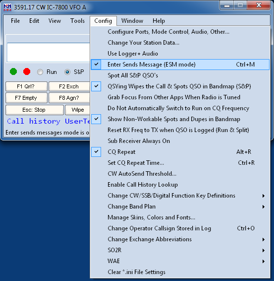
Agora feche o menu e digite qualquer indicativo na Entry window. Vamos supor que você está em S&P.
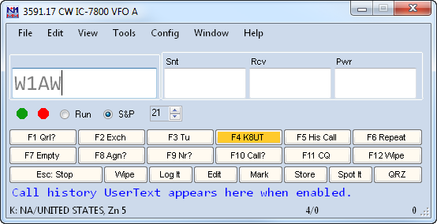
O que mudou? Olhe o botão F4. O destaque significa que, se você pressionar Enter agora, a mensagem F4 será enviada (que é o que você quer — seu indicativo). Pressione Enter, seu indicativo é enviado, mas o cursor continua no campo de indicativo, e F4 continua destacado. Se ele não responder da primeira vez, pressione Enter de novo. Se ele responder, pressione Espaço, e o cursor vai para o campo Exchange. Você ainda não está pronto para enviar seu exchange, pois ainda não copiou o exchange dele, então F8 (Agn?) fica destacado. Digite o exchange recebido, e veja só!
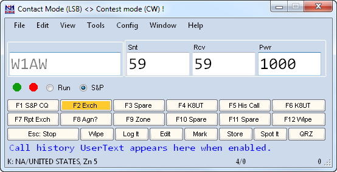
Agora F2 está destacado. Significa que, na próxima vez que você pressionar Enter, o programa envia F2 e loga o QSO.
Então, em vez de um processo de 8 passos para trabalhar um QSO de S&P, você tem 3 ou 4:
- Digite o indicativo
- Pressione Enter
- (opcional) Se ele não responder, pressione Enter de novo quando for hora de chamar de novo; se responder, pressione Espaço e copie o exchange dele
- Pressione Enter de novo para enviar seu exchange e logar o QSO
O que foi descrito acima é o comportamento padrão do ESM em S&P, que presume que você não vai conseguir resposta toda vez (ou na maioria das vezes) que chamar alguém. Se você é mais forte que isso, pode querer mudar esse comportamento. Vá no Configurer (primeira opção do menu Config), clique nele, escolha a aba Function Key, e procure a opção "ESM sends your call once, then ready to copy S&P exchange". Marque-a, e o comportamento muda: Enter agora envia seu indicativo uma vez, e o cursor vai direto para o campo Exchange. Ao mesmo tempo, o destaque vai para F8 Agn. Digite o exchange dele, e o destaque vai para F2 Exchange. Pressione Enter, e seu exchange é enviado. Se já houver um exchange válido no campo (digitado ou pré-preenchido), o destaque vai direto para F2 em vez de passar por F8. Depois de F2 enviado, o QSO é logado, e o destaque volta para F4, pronto para chamar a próxima estação.
Um truque para usar com a chave Big Gun ligada é programar seu indicativo em F8 em vez de "again". Assim, quando você não conseguir a estação na primeira chamada, pressione Enter de novo para repetir seu indicativo até ele responder (e o cursor sempre estará no lugar certo quando isso acontecer). 73 de Ted W4NZ
Mas e se você estiver fazendo Run (chamando CQ)? Primeiro, avise o programa marcando a caixa ao lado da palavra "Run", com o mouse ou com Alt+U. Agora sua Entry Window fica um pouco diferente:
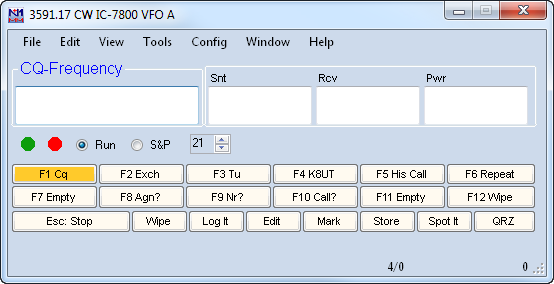
Note que o destaque agora está em F1, pois a primeira coisa na maioria dos QSOs de Run é um CQ. Pressione Enter e o programa envia F1.
Agora alguém responde. Digite o indicativo dele e a janela muda.
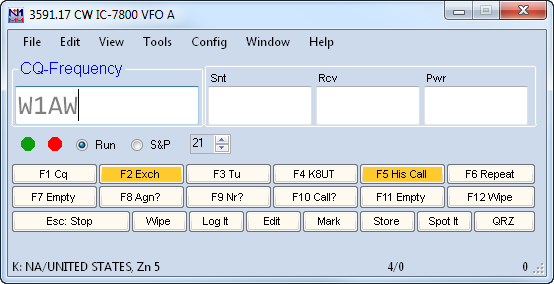
Você já está pegando o jeito — os destaques significam que, ao pressionar Enter, o programa envia F5 seguido de F2 (em CW — em fonia, você fala o indicativo e depois pressiona Enter para enviar o exchange).
Depois disso, a janela muda de novo.
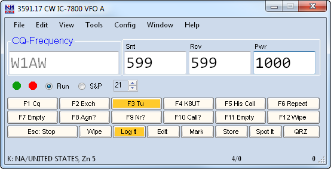
Agora os destaques indicam que você copiou um exchange válido (neste caso, o programa o preencheu a partir do indicativo), e que o próximo Enter vai enviar sua mensagem F3 e logar o QSO.
Então: digite um indicativo, pressione Enter 3 vezes, e você logou um QSO. Bem prático!
Agora suponha que, como eu, você erre ao copiar o exchange, deixando algo sem sentido no campo Exchange. Nesse caso, o programa te avisa:
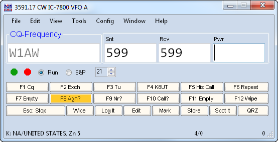
Se você pressionar Enter com um exchange incorreto, o programa envia a mensagem F8 e pede repetição. Se você perceber o erro e corrigir, a tela muda de novo, mostrando os destaques "F3 and Log It". Basta pressionar Enter, o programa envia a mensagem F3, loga o QSO, e pronto.
Depois de usar o ESM, aposto que você nunca mais vai querer voltar ao jeito antigo.
Os desenvolvedores reservaram F1 como a tecla "Call CQ". Pressioná-la em modo Search and Pounce muda você para Run. Embora não recomendemos alterar isso, há pelo menos duas formas de redefinir F1: modificar a tabela de atribuição de teclas do ESM (veja abaixo), ou usar a macro {S&P} no fim da sua definição de F1 para forçar o programa de volta ao modo S&P.
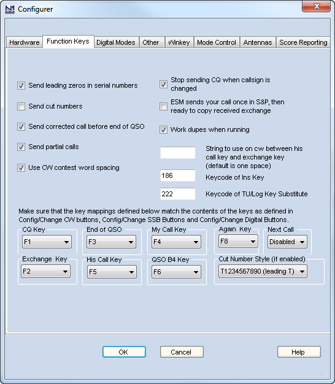
Duas últimas coisas, e este capítulo termina. Abra o menu Config de novo, e depois "Configure Ports, Telnet Address, Other". Clique na aba Function Keys:
Na coluna da esquerda, note a opção "Send Corrected Call" marcada. Esse recurso, em modo Run, acompanha se você alterou o indicativo no campo depois de já ter enviado seu exchange. Por exemplo, digamos que você copiou só "DL6A" no início e completou depois. Ao copiar DL6ABC e pressionar Enter para enviar F3 (mensagem de TU), em CW o programa envia "DL6ABC TU..." Em fonia, você precisa fazer a correção você mesmo.
Na coluna da direita, a terceira caixa tem o nome longo "ESM only sends your call once in S&P, then ready to copy received exchange" — resumidamente, a chamamos de chave "Big Gun". Se você quase sempre consegue a estação na primeira chamada, pode economizar uma tecla deixando o cursor avançar automaticamente para o campo Exchange após a primeira chamada. Se costuma precisar chamar mais de uma vez, não marque. Se marcada e você precisar chamar de novo, basta pressionar F4, não importa onde o cursor esteja.
Comportamento do cursor no ESM e a janela Digital Interface
Por causa da possibilidade de transferir dados da janela DI para a Entry window com um clique do mouse, o comportamento do cursor entre os campos da Entry window é um pouco diferente com a janela DI aberta ou fechada. Se você usa ESM em CW ou SSB com a janela DI aberta e o cursor não se move entre os campos de indicativo e exchange como esperado, tente fechar a janela DI.
Repetindo o que foi enviado por último
Em modo ESM, às vezes é preciso repetir o que foi enviado por último, seja indicativo, elemento do exchange ou outra tecla de função. A tecla "=" faz isso. Em vez de olhar a Entry Window e descobrir qual tecla enviar, basta pressionar "=" para reenviar o que foi enviado por último. Fácil!
Não altere os "mapeamentos de tecla" (abaixo do texto vermelho na aba Function Key do Configurer), a menos que você tenha absoluta certeza do que está fazendo — pode bagunçar completamente o ESM.
A tabela abaixo resume as combinações possíveis de informação na Entry window e o que é enviado em cada situação.
Nota: o ESM é afetado por duas opções na aba Function Keys do Configurer:
- a caixa "ESM sends your call once in S&P, then ready to copy received exchange" (às vezes chamada de opção "Big Gun")
- a caixa "Work dupes when running" (recomendada)
Ações da tecla Enter em modo ESM
| Campo de indicativo | Campo de exchange | Em Run, Enter envia | Em S&P, Enter envia |
| Vazio | Vazio | CQ (F1) | My Call (F4) |
| Indicativo novo (1ª vez) | Vazio ou inválido | His Call + Exch (F5+F2) | My Call (F4) |
| Indicativo novo (repetição) | Vazio ou inválido | Again? (F8) | My Call (F4) |
| Indicativo novo (repetição) – "ESM sends call once..." marcada | Vazio ou inválido | Again? (F8) | Again? (F8) |
| Indicativo novo (antes do exchange) | Válido | His Call + Exch (F5+F2) | Exchange + Log (F2+Log It) |
| Indicativo novo (depois do exchange) | Válido | End QSO + Log (F3+Log It) | Log (Log It) |
| Indicativo duplicado | Vazio ou inválido | QSO B4 (F6) | não faz nada |
| Duplicado (antes do exchange) | Válido | His Call + Exch (F5+F2) | Exchange + Log (F2+Log It) |
| Duplicado (depois do exchange) | Válido | End QSO + Log (F3+Log It) | Log (Log It) |
| Dupe (1ª vez) – "Work Dupes" marcada | Vazio ou inválido | His Call + Exch (F5+F2) | não faz nada |
| Dupe (repetição) – "Work Dupes" marcada | Vazio ou inválido | Again? (F8) | não faz nada |
| Dupe (antes do exchange) – "Work Dupes" marcada | Válido | His Call + Exch (F5+F2) | Exchange + Log (F2+Log It) |
| Dupe (depois do exchange) – "Work Dupes" marcada | Válido | End QSO + Log (F3+Log It) | Log (Log It) |
ESM on Phone – One Special Feature (ESM em Fonia – Um Recurso Especial)
Há todo motivo, ao fazer Run em CW ou RTTY, para usar mensagens armazenadas em quase toda transmissão. Fonia é diferente — você pode não querer que o computador fale por você o tempo todo.
- A maioria dos operadores prefere falar indicativos e números seriais eles mesmos, em vez de deixar o computador montá-los a partir de letras e números individuais. Veja a próxima seção para mais discussão e informações sobre como configurar suas teclas de função, escolha você deixar o computador fazer tudo ou não
- Em alguns contests como o CQWW, o exchange é tão curto que pode não valer a pena ter o computador locucionando sua zona de CQ
Ou... você pode esquecer, especialmente operando cansado, e falar o indicativo da outra estação e seu exchange antes de perceber o que fez.
Para lidar com isso, o N1MM Logger incorpora uma flexibilidade adicional. Veja como funciona, segundo o próprio criador, N2IC:
Você está em modo Run. Uma estação responde. Você digita o indicativo, e usa sua voz ao vivo para enviar indicativo e exchange. Agora, a estação está prestes a enviar o exchange dela. Se, neste momento, você pressionar Enter, seu arquivo wav de exchange seria enviado — ruim, já que você já usou a voz ao vivo. Em vez de Enter, pressione a Barra de Espaço. Agora digite o exchange da outra estação. Pressione Enter, e a mensagem de "Obrigado" será enviada, e o QSO logado.
Resumindo, a decisão entre usar Enter ou a Barra de Espaço, nesse momento do processo de log, depende de você usar a voz ao vivo ou um arquivo wav para enviar seu exchange.
Aqui vai uma versão ilustrada de como funciona:
Você está fazendo Run, e W8QZR te chama. Você digita o indicativo dele no campo.
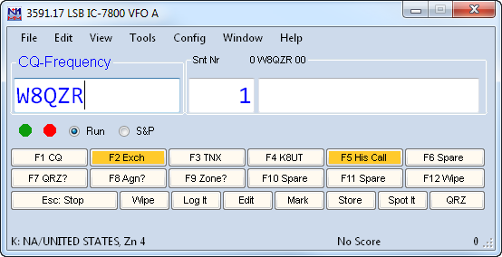
Aí, por algum motivo, você fala o indicativo dele e o exchange, em vez de deixar o computador fazer isso. Se você pressionar Enter agora, o programa vai, como diz, transmitir o indicativo dele e a mensagem de exchange armazenada. Não é o que você quer.
Em vez disso, pressione a Barra de Espaço.
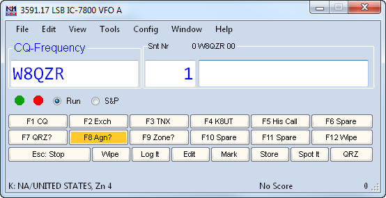
Perfeito! Agora o cursor está no campo Exchange. Ainda não há nada nele, então F8 (Agn?) está destacado. Digite o exchange dele.
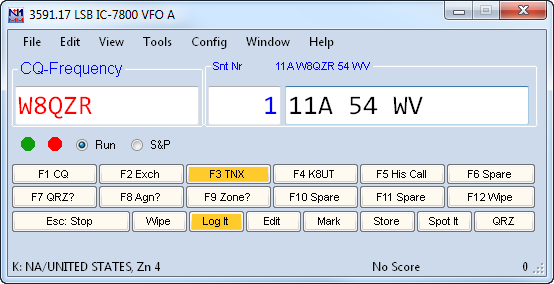
O destaque vai para os botões TU e "Log It", exatamente onde deveria. Pressione Enter, e o computador loga o QSO, envia sua mensagem "TU QRZ", e fica pronto para o próximo QSO.